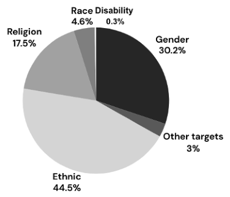
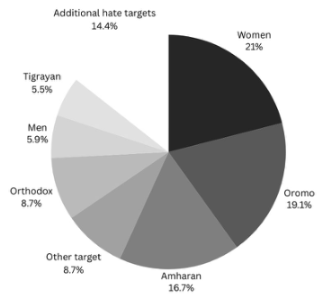
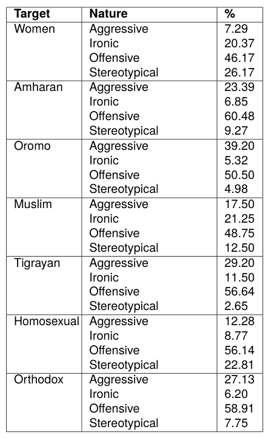

RAIL 2024Tafsiri ya mashine
Rasilimali kwa ajili ya kuandika maneno ya chuki katika majukwaa ya mitandao ya kijamii yanayotumika nchini Ethiopia: msamiati mpya na mpango wa kuweka vitambulisho
Tafsiri ya mashine, haijakaguliwa na binadamu. Makala asili ndiyo toleo la rejeo; sentensi zilizopigiwa mstari ni zile ambazo ukaguzi wa kiotomatiki haukuwa na uhakika nazo.
Proceedings of the Fifth Workshop on Resources for African Indigenous Languages @ LREC-COLING 2024.
Tafsiri ya Ernst van Gassen (Arktos AI Lab), yenye leseni CC BY-NC 4.0 kama makala asili. Matumizi tena yanaruhusiwa kwa kutaja mwandishi, kwa matumizi yasiyo ya kibiashara tu. Waandishi asili hawajakagua wala kuidhinisha tafsiri hii.
Maandishi matupu ya kutumia tena, pamoja na leseni yake: Kiswahili · LESENI
Taasisi
Nuhu Ibrahim†, Felicity Mulford†, Matt Lawrence† and Riza Batista-Navarro†,‡
†Centre for Information Resilience, London, UK
‡Department of Computer Science, The University of Manchester, UK
Anwani za barua pepe zimeondolewa kwa sababu za faragha. Zinapatikana katika PDF asilia.
Muhtasari
Matamshi ya chuki kwenye mitandao ya kijamii yameenea sana Ethiopia. Ili kusaidia tafiti zinazolenga kuchunguza walengwa na aina za matamshi ya chuki yanayosambaa katika muktadha wa Ethiopia, tulitengeneza mpango mpya wa ufafanuzi wa kina unaonasa vipengele vitatu vya matamshi ya chuki: mlengwa (yaani, makundi yoyote yenye sifa zinazolindwa), aina (yaani, mbinu ya unyanyasaji) na asili (yaani, mtindo wa lugha iliyotumika). Pia tulitengeneza leksimu mpya ya maneno muhimu yanayohusiana na matamshi ya chuki katika lugha nne maarufu zaidi zinazopatikana kwenye mitandao ya kijamii ya Ethiopia: Kiamhara, Kiafaan Oromo, Kiingereza na Kitigrinya. Maneno haya muhimu yalituwezesha kupata machapisho ya mitandao ya kijamii (pia katika lugha hizo hizo nne) kutoka majukwaa matatu (yaani, X, Telegram na Facebook), ambayo yana uwezekano wa kuwa na matamshi ya chuki. Wataalamu katika muktadha wa Ethiopia kisha walifafanua kwa mikono sampuli ya machapisho hayo yaliyopatikana, na kupata makubaliano ya wastani kati ya wafafanuzi. Ufafanuzi uliopatikana uliunda msingi wa uchunguzi kifani wa makundi yanayoelekea kulengwa na aina fulani za matamshi ya chuki au na mitindo fulani ya lugha ya matamshi ya chuki.
Maneno Muhimu
Matamshi ya chuki, Lugha za Ethiopia, Mitandao ya kijamii, Mpango wa ufafanuzi, Utengenezaji wa leksimu
1. Utangulizi
Mitandao ya kijamii imeibuka kama zana madhubuti za mawasiliano, ikiwawezesha watu binafsi kutoa sauti za maoni, kubadilishana taarifa na kushiriki katika mijadala mbalimbali (Poell and Van Dijck, 2015). Hata hivyo, mazingira yasiyo na vikwazo ya majukwaa haya pia yamechochea kuenea kwa matamshi ya chuki, na hivyo kuleta vikwazo mashuhuri kwa mshikamano wa kijamii, hasa katika mazingira yenye utofauti wa kitamaduni kama Ethiopia. Kwa kuongezeka kwa mawasiliano ya kidijitali ambayo yamehimiza kufungamana kwa maisha ya kibinafsi na ya umma mtandaoni, matamshi ya chuki yamegundua njia mpya za kuenezwa, mara nyingi yakilenga jamii zilizotengwa au makundi ya wachache (Kovács et al., 2021) na kuzidisha migawanyiko ya kijamii (Targema and Lucas, 2018).
Ethiopia, nchi inayojulikana kwa utajiri wake wa lugha na utofauti wa kitamaduni, imeshuhudia kuenea kwa kasi kwa matamshi ya chuki kwenye majukwaa ya mitandao ya kijamii kama vile Twitter, Telegram na Facebook (Delelegn, 2021). Matukio ya hivi karibuni, ikiwa ni pamoja na vurugu baina ya makabila na machafuko ya kisiasa, yameangazia athari ya uharibifu ya matamshi ya chuki mtandaoni kwa jamii ya Ethiopia. Kwa mfano, kuongezeka kwa mvutano kati ya makundi ya kikabila katika maeneo mbalimbali kumechochewa, kwa sehemu, na usambazaji wa matamshi ya chuki na matamshi ya uchochezi kwenye majukwaa ya mitandao ya kijamii (Delelegn, 2021).
Lugha za wachache zinaendelea kukabiliwa na uhaba wa rasilimali za kikompyuta kwa ajili ya kukusanya na kuchambua seti kubwa za data za maandishi, na hivyo kusababisha rasilimali chache au kutokuwepo kabisa kwa ajili ya kugundua kiotomatiki matamshi ya chuki kwenye mitandao ya kijamii (El-Haj et al., 2015; Kovács et al., 2021). Utafiti huu unalenga kuunda mpango wa uwekaji lebo wenye undani kwa ajili ya kuandika maelezo ya matamshi ya chuki. Mpango wa kuweka lebo unasaidia katika kutoa seti ya data ya matamshi ya chuki iliyofafanuliwa kwa kina ambayo haitambui tu chuki bali pia makundi yanayolengwa yenye sifa zinazolindwa, na aina na asili ya matamshi ya chuki. Aidha, utafiti huu unalenga kuunda leksimu katika lugha nne (Kiamhariki, Kiafaan Oromo, Kiingereza na Kitigrigna) ambazo zinaashiria matamshi ya chuki katika misingi ya kijinsia, kikabila na kidini, ambayo kwa ufahamu wetu kwa sasa ndiyo leksimu pana zaidi kwa muktadha wa Ethiopia.
Utafiti huu unajengwa juu ya utafiti wa awali uliofanywa na Kituo cha Ustahimilivu wa Habari (CIR) ambao ulizingatia uzoefu binafsi na athari za kudumu za unyanyasaji mtandaoni kupitia mapitio ya maandiko yaliyopo na mahojiano na wanawake 14 wanaoshikilia nyadhifa maarufu katika vyombo vya habari, asasi za kiraia na majukumu mengine ya umma nchini Ethiopia (Centre for Information Resilience, 2023). Matokeo yao yanaangazia sumu ya mazingira ya mtandaoni, na wahojiwa walifichua kwamba unyanyasaji na usumbufu walioupata mtandaoni umekuwa na athari za ulimwengu halisi, ikiwa ni pamoja na madhara ya kisaikolojia, uharibifu wa sifa za kitaaluma, usumbufu wa maisha ya familia na kunyamazishwa kwa wanawake mtandaoni na nje ya mtandao. Kwa kuzingatia uzito wa matamshi ya chuki yanayoenea kwenye mtandao katika lugha za wachache na athari zake kwa matukio nchini Ethiopia, tunahoji kwamba kuna haja ya dharura ya kuunda rasilimali zitakazowezesha uundaji wa mbinu za uchakataji wa lugha asilia (NLP) zinazoweza kusaidia katika kugundua kiotomatiki matamshi hayo ya chuki. Kwa lengo hili, tunawasilisha: (1) mpango wa kina wa ufafanuzi wa kuweka lebo kwa matamshi ya chuki yanayosambaa katika mitandao ya kijamii inayotumika Ethiopia; (2) leksimu mpya ya maneno muhimu yanayohusiana na matamshi ya chuki, inayoshughulikia maneno ya kichochezi yanayotumika katika Kiamhariki, Kiafaan Oromo, Kiingereza na Kitigrigna; na (3) korasi ya machapisho ya mitandao ya kijamii yaliyofafanuliwa kwa kuzingatia mpango wa kina wa ufafanuzi.
2. Muktadha wa Ethiopia
Utafiti huu ulitumia ufafanuzi wa Serikali ya Ethiopia wa matamshi ya chuki, kama ulivyowekwa ndani ya Tangazo la Kuzuia na Kukandamiza Matamshi ya Chuki na Taarifa Potofu (Na.1185/2020) (Federal Democratic Republic of Ethiopia, 2020), ambalo linafafanua kama "matamshi ambayo kwa makusudi yanakuza chuki, ubaguzi au mashambulizi dhidi ya mtu au kikundi kinachotambulika cha utambulisho, kwa misingi ya kabila, dini, rangi, jinsia au ulemavu. "
Katika utafiti wetu, tulichunguza matamshi ya chuki katika mitandao ya kijamii inayotumika sana nchini Ethiopia. Tulizingatia kwa uangalifu ufafanuzi wa matamshi ya chuki uliotolewa na Serikali ya Ethiopia, kama ilivyoelezwa hapo juu. Ethiopia ina utofauti mkubwa kwa upande wa lugha zinazotumika, ikiwa na zaidi ya lugha 80 zinazozungumzwa (Leyew, 2020). Kwa sababu za uwezekano na vikwazo vya rasilimali, tuliamua kuzingatia kuchambua maudhui katika lugha nne tu kuu - Kiamhari, Kiafaan Oromo, Kiingereza na Kitigrinya. Uteuzi wa lugha hizi ulitokana na umaarufu wake katika mitandao ya kijamii nchini (Zelalem, 2010).
Wakati huo huo, majukwaa matatu tofauti ya mtandaoni yalichaguliwa kama chanzo cha maudhui kwa uchambuzi, yaani X (zamani Twitter), Telegram na Facebook. Majukwaa haya yalichaguliwa kwa kuzingatia matumizi yake makubwa nchini Ethiopia (Daracho, 2020; Asale, 2020), pamoja na uwezo unaotolewa na sera zake kuhusu ukusanyaji wa data na usindikaji (Sosa na Sharoff, 2022; Giglietto et al., 2012). Zaidi ya hayo, hizi zilikuwa tovuti tatu ambazo ziliripotiwa na wahojiwa (katika utafiti wa awali wa CIR) kama mazingira ambayo walikumbana na unyanyasaji mtandaoni (Centre for Information Resilience, 2023).
3. Kazi Zinazohusiana
Uundaji wa mifumo ya kuweka lebo za matamshi ya chuki na leksimu kwa lugha za Ethiopia ndani ya uwanja wa NLP umepata usikivu unaoongezeka katika miaka ya hivi karibuni, ukichochewa na utambuzi unaokua wa utofauti wa lugha na utajiri wa kitamaduni wa Ethiopia. Ingawa kuna uhaba wa machapisho yaliyojitolea hasa kwa mada hii, juhudi kadhaa zinazohusiana zimetoa maarifa muhimu kuhusu changamoto, mbinu na mikabala inayohusiana na mifumo ya kuweka lebo za matamshi ya chuki na uundaji wa leksimu kwa lugha za Ethiopia.
Peace Tech Lab (2023) iliripoti takriban maneno 21 ya uchochezi, tahajia zao zinazohusiana na maneno yanayohusishwa, maana zake na sababu kwa nini maneno haya ni ya uchochezi. Pia walitoa maneno 16 ya ziada ambayo ni ya kukera na yanapaswa kufuatiliwa. Minale (2022) alikusanya maneno muhimu ya chuki katika Kiamhariki na tafsiri yake kwa Kiingereza, na kisha akapanga maneno hayo muhimu katika kategoria, yaani, maneno muhimu ya 'taifa la Ethiopia' , 'jinsia' , 'yanayohusiana na chuki' , 'ya kukera' na 'ya kidini' . Walitumia maneno haya muhimu kukusanya data za Kiamhariki kiotomatiki kutoka mitandao ya kijamii mitatu: Facebook, Twitter na YouTube. Seti hizi za data kisha ziliainishwa na wawekaji lebo binadamu katika kategoria nne: 'matamshi ya kawaida' , 'matamshi ya chuki ya rangi' , 'matamshi ya chuki ya kidini' , 'matamshi ya chuki ya kijinsia' na 'matamshi ya chuki dhidi ya walemavu' .
Wakati huo huo, Jha na Mamidi (2017) walikusanya machapisho ya Kiingereza ya kijinsia kutoka Twitter kwa kulinganisha maneno au lebo za reli ambazo hutumiwa kwa kawaida wakati wa kuonyesha kile wanachokiita "ubaguzi wa kijinsia wenye nia njema" . Baadhi ya maneno haya na lebo za reli walikuwa: "bora kama mwanamume", "kama mwanamume", "kwa msichana", "mwerevu kwa msichana", "upendo wa mwanamke", "#adaywithoutwomen", "#womensday", "#everydaysexism" na "#weareequal". Machapisho yaliyokusanywa yalifafanuliwa kwa mikono na yalitumika kufunza modeli inayotegemea kujifunza kwa mashine ili kuainisha machapisho katika makundi matatu ('Hostile', 'Benevolent', 'Others') kulingana na aina ya ubaguzi wa kijinsia unaoonyeshwa. Sawa na Minale (2022), kazi ya Jha na Mamidi (2017) ilikusanya maneno muhimu ya ubaguzi wa kijinsia ya Kiamhara na kuyatumia kukusanya machapisho kutoka Twitter; pia walijenga modeli mbalimbali za uainishaji.
Baadhi ya kazi za awali zililenga uchanganuzi wa matamshi ya chuki kwa lugha za Ethiopia. Kwa mfano, Getachew (2020) na Ayele et al. (2022) walichunguza matamshi ya chuki ya Kiamhara. Kanessa na Tulu (2021) na Defersha na Tune (2021) walilenga matamshi ya chuki katika Kiafaan Oromo huku Bahre (2022) alichunguza matamshi ya chuki katika Kitigrinya.
Tuligundua kwamba watafiti wengi katika muktadha wa Ethiopia wamejikita katika kukusanya leksimu za matamshi ya chuki kwa Kiamhara, na juhudi chache tu zimejaribu kukusanya leksimu za matamshi ya chuki kwa lugha nyingine za Ethiopia, kwa mfano, Kiafaan Oromo, Kitigrinya na Kiingereza (kama inavyotumika katika muktadha wa Ethiopia). Kinyume chake, kazi yetu ilikusanya leksimu za matamshi ya chuki kwa lugha nyingi za Ethiopia: Kiamhara, Kiafaan Oromo, Kiingereza na Kitigrinya. Lugha hizi ndizo zinazotumika zaidi katika majukwaa ya mitandao ya kijamii nchini (Zelalem, 2010).
Zaidi ya hayo, mifumo mingi ya uwekaji lebo iliyotengenezwa kwa ajili ya lugha za Ethiopia ilitenga tu matamshi ya chuki kuwa ama 'chuki' au 'hakuna chuki'. Baadhi ya tafiti kama ile ya Minale (2022) zilienda mbali zaidi kufafanua kategoria za chuki: 'matamshi ya kawaida', 'matamshi ya chuki ya rangi', 'matamshi ya chuki ya kidini', 'matamshi ya chuki ya kijinsia' na 'matamshi ya chuki dhidi ya ulemavu'. Jha na Mamidi (2017) pia walitenga machapisho ya chuki/ya kijinsia kuwa 'Yenye Uadui', 'Yenye Nia Njema' au 'Mengine', hata hivyo, walijikita tu katika kutambua ubaguzi wa kijinsia. Utafiti wetu unaenda mbali zaidi ya kazi zilizopo kwa kuunda mfumo wa uwekaji lebo wa kina unaotambua vipengele vitatu katika machapisho ya chuki: mlengwa, aina na asili ya matamshi ya chuki.
4. Mfumo wa Uwekaji Lebo
Mifumo ya uwekaji lebo kwa kawaida huwa na seti ya miongozo au sheria zinazotumika kuweka lebo au kuweka alama kwenye data kwa taarifa au sifa mahususi (Bird et al., 2009). Sehemu hii inajadili uundaji wa mfumo wa uwekaji lebo wa kina kwa ajili ya kuweka lebo kwenye matamshi ya chuki kwenye majukwaa ya mitandao ya kijamii katika muktadha wa Ethiopia.
Kwa mujibu wa ufafanuzi wa matamshi ya chuki katika muktadha wa Ethiopia, uliowekwa katika Sehemu ya 2, ili chapisho lichukuliwe kuwa lina matamshi ya chuki, ni lazima lielekezwe kwa mtu binafsi au kikundi chenye sifa inayolindwa. Wakati chapisho linapokuwa na matamshi ya chuki, mpango wetu wa kuweka lebo unahitaji wafafanuzi kuweka lebo kwenye vipengele vitatu katika chapisho: mlengwa, aina na asili ya matamshi ya chuki. Tunamwelekeza msomaji kwenye Kielelezo 1) kwa mchoro unaotoa muhtasari wa lebo katika mpango wetu wa ufafanuzi. Katika kazi yetu, aina ya matamshi ya chuki inarejelea mbinu ya unyanyasaji (kama vile vitisho), wakati asili inarejelea mtindo uliotumika katika lugha inayoelezea unyanyasaji (kama vile kejeli au ubaguzi wa kijumla).
Ili kunasa taarifa kuhusu mlengwa wa matamshi ya chuki, maneno yanayowasilisha ni mtu/kikundi gani kinalengwa yanapaswa kupewa mojawapo ya lebo zifuatazo:
- Jinsia: Mtu binafsi au kikundi cha watu wa jinsia fulani.
- Ukabila: Mtu binafsi au kikundi cha watu wanaotoka sehemu fulani ya asili na utamaduni.
- Dini: Mtu binafsi au kikundi cha watu wanaomilikiwa na kikundi fulani cha kidini.
- Rangi: Mtu binafsi au kikundi cha watu chenye sifa bainifu za kimwili zinazohusishwa na rangi fulani.
- Ulemavu: Mtu binafsi au kikundi cha watu chenye ulemavu fulani.

Kielelezo 1: Muhtasari wa kategoria katika mpango wetu wa ufafanuzi.
Zaidi ya hayo, ili kunasa taarifa kuhusu aina ya usemi, maneno yanayowasilisha njia ya unyanyasaji yanapaswa kupewa lebo zozote kati ya zifuatazo:
- Tusi: Matusi au misemo ya kudhalilisha dhidi ya mtu binafsi/kikundi kutokana na sifa zinazolindwa.
- Tishio: Vitisho, matishio au uchochezi wa chuki, vurugu au ukiukaji wa haki za watu binafsi, kutokana na sifa zinazolindwa.
- Uhusiano Unaodhaniwa: Uhusiano unaodhaniwa wa sifa zinazolindwa na maana hasi.
- Uduni Unaodaiwa: Marejeleo ya uduni unaodaiwa (au ubora) wa mtu binafsi/kikundi chenye sifa inayolindwa.
Mwishowe, asili au mtindo wa matamshi ya chuki mara nyingi hutofautiana kutoka chapisho moja hadi jingine. Ingawa si muhimu kwa uainishaji wa matamshi ya chuki, kukusanya taarifa kuhusu mtindo kunanasa nuances katika lugha inayotumika kueleza chuki. Ili kunasa taarifa hii, lugha yenye matamshi ya chuki inahitaji kuwekewa lebo kama yoyote kati ya:
- Mkali: Inajumuisha lugha kali inayolenga kutisha kimwili, kutishia au kuchochea vurugu za kimwili dhidi ya mpokeaji, au inayoomba, kupendekeza au kukuza ukiukaji wa haki za mpokeaji.
- Kukera: Aina kadhaa tofauti za usemi, kutoka lugha ya kutukana, kudhalilisha au kudunisha, hadi kuhusisha lengwa (mtu binafsi au kikundi) na sifa binafsi zenye madhara au za uongo, au kupendekeza uduni wa lengwa.
- Kejeli: Inajumuisha vicheshi, satire au ujumbe wa kejeli unaolenga sifa inayolindwa ya mpokeaji na unaweza kuwa na madhara. Maudhui ya chuki wakati mwingine huwasilishwa kwa kutumia nuances katika lugha, kama vile kejeli, ucheshi au satire.
- Stereotypical: Inalingana na marejeleo ya wazi au yasiyo wazi kwa imani potofu au chuki kuhusu mtu binafsi/kikundi chenye sifa zinazolindwa.
Mpango wa kuweka lebo huhakikisha kwamba timu ya wafafanuzi wa lugha nyingi wana uelewa wa pamoja wa lebo zipi zinazounda matamshi ya chuki. Zaidi ya hayo, inapotumika, mpango wa kuweka lebo huzalisha seti ya data tajiri ya matamshi ya chuki ambayo haitaeleza tu kama chapisho lina chuki bali pia kategoria inayolengwa ya sifa zinazolindwa zinazopokea chuki, na aina na asili ya chuki inayopokewa. Hii itasaidia kujibu maswali muhimu kama:
- Ni kwa kiwango gani makundi yenye sifa fulani zinazolindwa, k.m., jinsia, dini, kabila, rangi, n.k., hupokea chuki kwenye mitandao ya kijamii?
- Ni aina na asili gani ya matamshi ya chuki yanayoenea?
- Je, baadhi ya sifa zinazolindwa hupokea chuki zaidi kwenye mitandao ya kijamii, ikilinganishwa na nyingine?
- Je, matamshi ya chuki yanatofautiana vipi katika vikundi vidogo vinavyolengwa, yaani, wanawake, wanaume, mashoga kwa kategoria ya jinsia?
- Je, matamshi ya chuki yanatofautiana vipi wakati sifa nyingi zinazolindwa zinalengwa (yaani, matamshi ya chuki yanayolenga watu binafsi/vikundi kwa misingi ya mistari mingi ya utambulisho)?
5. Uchunguzi wa kesi
Mpango wetu wa ufafanuzi ulitumika kwa uchunguzi kifani uliolenga kuchunguza ni makundi gani yenye sifa zinazolindwa ambayo mara nyingi yamekuwa yakilengwa na matamshi ya chuki katika muktadha wa Ethiopia, pamoja na aina na asili ya lugha inayoelekezwa kwao. Sehemu hii inaeleza hatua tulizochukua kukusanya na kufafanua data kutoka kwa majukwaa mbalimbali ya mitandao ya kijamii ili kuunga mkono uchunguzi kifani.
5.1. Ukusanyaji wa Data
Tulikusanya aina mbili za data: maneno muhimu yanayounda leksimu mpya ya matamshi ya chuki ya Ethiopia, na machapisho ya mitandao ya kijamii yanayounda korasi mpya ya matamshi ya chuki.
5.1.1. Uundaji wa Leksimu
Kwa kuzingatia wingi mkubwa wa machapisho ya mitandao ya kijamii yanayochapishwa kila siku, tuliunda leksimu ya maneno muhimu ili kusaidia katika ukusanyaji wa machapisho ambayo yana uwezekano wa kuwa na matamshi ya chuki. Hasa, tulikusanya maneno muhimu katika lugha nne—Kiamhara, Kiafaan Oromo, Kiingereza na Kitigrinya—ambayo yanaashiria matamshi ya chuki katika misingi ya kijinsia, kikabila na kidini.
Leksimu ilitengenezwa kupitia utafiti wa dawati uliotumia utambuzi na uboreshaji wa leksimu zilizopo za matamshi ya chuki (Minale, 2022; Degu, 2022; Getachew, 2020; James, 1998; Jha and Mamidi, 2017; Gashe, 2022; Gao et al., 2017; Peace Tech Lab, 2023; Hatebase.org, 2023; Thalikir, 2016; Centre, 2021; Shariatmadari, 2016; Center for the Advancement of Rights and Democracy, 2023), utambuzi wa maneno muhimu na masimulizi mengine wakati wa mahojiano ya ana kwa ana, yaliyopangwa nusu yaliyofanywa wakati wa utafiti wa awali wa CIR (Centre for Information Resilience, 2023) na mjadala wa meza ya duara uliowaleta pamoja watu 21 kutoka kwa anuwai ya mashirika ya kiraia, mashirika ya Umoja wa Mataifa, na vikundi vya utetezi wa haki za wanawake na wasichana.
Rasimu ya kwanza ya leksikoni ilishirikiwa na washirika, wadau na waliohudhuria mjadala wa meza duara nchini Ethiopia kwa ajili ya maoni. Ilionekana wazi katika hatua hii kwamba kulikuwa na mkanganyiko kuhusu kwa nini baadhi ya maneno yalikuwa yamejumuishwa katika leksikoni, kwani huenda yenyewe pekee yasiwe ni matamshi ya chuki. Ilielezwa kwa wadau kwamba maneno muhimu yatatumika tu kukusanya machapisho mengi iwezekanavyo (mbinu ya kumbuko tambuzi ya juu lakini ushabaha wa chini), na ukaguzi wa kibinadamu bado ni muhimu, kwani tunatambua kwamba—kama ilivyo kwa mbinu yoyote inayotegemea kamusi—maneno mengi muhimu yana utata na hivyo uwepo wake katika chapisho haimaanishi lazima kwamba chapisho hilo lina matamshi ya chuki. Kwa hiyo, wafafanuzi binadamu watachambua ikiwa maudhui kwa hakika yana matamshi ya chuki, kulingana na mpango wa kuweka lebo uliotengenezwa.
Leksikoni iliyopatikana ina maneno muhimu ya uchochezi 2,058 katika lugha nne zilizo katika upeo wa utafiti huu. Tunaamini kwamba, hadi sasa, hii ndiyo leksikoni pana zaidi kwa muktadha wa Ethiopia. Kielelezo 2 na 3 kwa mtiririko huo vinaonyesha idadi na usambazaji wa maneno muhimu yaliyokusanywa kwa kila sifa inayolindwa.

Kielelezo 2: Idadi ya maneno muhimu yaliyokusanywa kwa kila sifa inayolindwa

Kielelezo 3: Usambazaji wa maneno muhimu yaliyoratibiwa kwa kila sifa inayolindwa
5.1.2. Ukusanyaji wa Data
Machapisho ya mitandao ya kijamii yalikusanywa kutoka kwenye majukwaa yanayolengwa, yaani, X (zamani Twitter), Telegram na Facebook. Ili kukusanya data kutoka X, zana ya uchambuzi wa mitandao ya kijamii ya Meltwater ilitumika. Meltwater inasaidia matumizi ya utafutaji wa maneno muhimu kwa twiti zilizochapishwa si zaidi ya miezi 18 tangu tarehe ya utafutaji. Ili kuhakikisha sampuli husika inapatikana, machapisho ya Kiingereza yalitolewa tu ikiwa yalitoka Ethiopia.
Katika kukusanya data kutoka Telegram, API rasmi za Telegram zilitumika. Kwa vile Telegram inasaidia tu utafutaji ndani ya Vituo vya Telegram ambavyo mtumiaji ni mwanachama, wataalamu wa mitandao ya kijamii kutoka Ethiopia walishirikishwa ili kuratibu kwa umakini orodha ya Vituo vya Telegram vya umma vinavyojulikana sana na vyenye ushawishi nchini Ethiopia. Baadaye, tulijiunga na jumla ya vituo 285 vya Telegram; machapisho ya Telegram katika vituo hivi yaliyo na maneno muhimu katika leksimu yetu yalikusanywa.
Ili kutoa data kutoka Facebook, wataalamu wa mitandao ya kijamii kutoka Ethiopia walishirikishwa tena katika kuchagua orodha ya vikundi na wasifu maarufu na wenye ushawishi wa umma wa Ethiopia kwenye Facebook. Kama matokeo ya ushirikishwaji huu, orodha ya wasifu au vikundi 300 vya Facebook ilitayarishwa, na machapisho kutoka vikundi hivi yaliyo na maneno muhimu katika leksimu yetu yalikusanywa.
5.1.3. Uchakataji wa Awali wa Data
Uchakataji wa awali wa data ni hatua muhimu inayohusisha kusafisha, kubadilisha na kupanga data ghafi ya kimaandishi ili kuifanya ifae kwa uchanganuzi (Tabassum and Patil, 2020).
Data ya kimaandishi inayokusanywa kutoka mitandao ya kijamii mara nyingi huwa na taarifa zisizo na umuhimu au zenye makosa zinazotatiza uchanganuzi au ufafanuzi. Ili kupunguza tatizo hili, tulitekeleza kazi zifuatazo kwenye seti za data kutoka X, Telegram na Facebook:
- Uondoaji wa lebo za HTML na herufi maalum.
- Urekebishaji wa herufi za maandishi (yaani, kufanya herufi zote kuwa ndogo) ili kuhakikisha kutokuwa na tofauti ya ukubwa wa herufi.
- Kuondolewa au kubadilishwa kwa alama ya uakifishaji.
- Kuondolewa kwa machapisho yaliyorudiwa.
Kazi zifuatazo za kusafisha zilifanywa tu kwenye seti za data katika lugha ya Kiingereza:
- Kuondolewa kwa thamani za nambari, tarehe na taarifa nyingine zisizo za kimaandishi.
- Kuondolewa kwa maneno ya kusitisha ambayo hayana maana yoyote muhimu (k.m., "na", "the", "katika").
- Usawazishaji wa vifupisho na akronimu.
5.1.4. Kutokutambulisha Data
Majina yote ya watumiaji katika machapisho yalifanywa kutokutambulika kwa kuzingatia mahitaji ya kimaadili, ili kulinda faragha na usiri wa watu ambao data zao zinatumika kwa utafiti na uchambuzi. Hili lilifanywa kwa kubadilisha majina yote ya watumiaji, yaani, neno lolote linaloonekana baada ya alama ya '@' na neno "USERNAME".
5.1.5. Sampuli kwa Uchambuzi Zaidi
Mchakato wa ukusanyaji wa data ulisababisha ukusanyaji wa makumi ya mamilioni ya machapisho, kama inavyoonyeshwa katika Jedwali la 1. Hata baada ya uchakataji wa awali wa data wa kina, uliohusisha kuondoa nakala rudufu na machapisho mafupi kupita kiasi, zaidi ya machapisho milioni 5 yalibaki.
Kutokana na vikwazo vilivyoletwa na rasilimali watu chache zilizopo kwa ufafanuzi wa kibinadamu ili kubaini maudhui ya chuki, tulichagua sampuli nasibu ili kupata seti za data zinazoweza kudhibitiwa zaidi. Jedwali la 1 linaonyesha idadi ya machapisho yaliyotokana na kila hatua ya mchakato wa utayarishaji wa data na idadi ya machapisho yaliyochaguliwa kwa uchambuzi unaofuata.
5.2. Kazi ya Ufafanuzi
Kazi ya ufafanuzi inahusisha kuandikisha wafafanuzi binadamu stadi ambao wanafahamu kikoa cha maslahi ili kutumia mpango wa kuweka lebo uliotengenezwa kwa ajili ya kubaini kama machapisho katika seti ya data iliyokusanywa yana matamshi ya chuki. Wafafanuzi walitumia Doccano (Nakayama et al., 2018), zana ya ufafanuzi ya Programu huria ambayo tuliitumia kuweka lebo kwenye machapisho katika seti zetu za data kulingana na mpango wetu wa ufafanuzi, yaani, kufafanua walengwa wa matamshi ya chuki (sifa zinazolindwa), aina na asili ya matamshi ya chuki.

Jedwali la 1: Idadi ya machapisho yaliyopatikana katika kila hatua ya mchakato wa utayarishaji wa data.
6. Matokeo ya Ufafanuzi
Ili kuhakikisha uthabiti katika utumiaji wa mpango wa uwekaji lebo wa kina, ilikuwa muhimu kukokotoa alama za makubaliano baina ya wafafanuzi (IAA).
Wafafanuzi wawili binadamu waliorodheshwa ili kufafanua machapisho ya Kiingereza yaliyochaguliwa kwa nasibu. Mfafanuzi mkuu ambaye alishiriki katika uundaji wa mpango wa uwekaji lebo wa kina na anayefahamu muktadha wa Ethiopia, alikuwa na jukumu la kufafanua uteuzi mzima wa machapisho ya Kiingereza. Ili kuruhusu ukadiriaji wa IAA, mfafanuzi wa pili alipewa jukumu la kufafanua 10% ya seti ya data iliyofafanuliwa na mfafanuzi mkuu.
Kwa Kiamhariki, mfafanuzi mkuu, mzungumzaji asilia wa Kiamhariki mwenye uzoefu katika uchanganuzi wa mitandao ya kijamii, alifanya ufafanuzi wa seti nzima ya data ya Kiamhariki, huku wafafanuzi wengine wawili (waliopewa seti za data za Kitigrinya na Kiafaan Oromo) walipewa jukumu la kufafanua takriban 10% ya seti ya data iliyofafanuliwa na mfafanuzi mkuu. IAA ilikadiriwa baadaye kwa kutumia machapisho yaliyofafanuliwa na wafafanuzi wote watatu ili kutathmini kiwango cha makubaliano na uthabiti.
Kwa Afaan Oromo na Tigrigna, mfafanuzi aliajiriwa kwa kila lugha. IAA ilionekana kuwa si ya lazima kwa wafafanuzi, kwa kuwa wafafanuzi hao hao walikuwa wamefanya kazi hapo awali ya kufafanua seti ya data ya Kiamhara, na matokeo ya makubaliano ya IAA kwenye seti ya data ya Kiamhara yalionyesha umahiri wao katika kutambua matamshi ya chuki, kuweka lebo kwenye mlengwa wake, kuainisha aina za matamshi na kutathmini hisia za chuki.
IAA ilihesabiwa kwa kutumia vipimo vya Cohen's Kappa (k) na Fleiss' Kappa. Alama za IAA, zilizowasilishwa katika Jedwali la 2, zilionyesha makubaliano ya wastani wa chini hadi ya wastani kati ya wafafanuzi (Landis na Koch, 1977).

Jedwali la 2: Matokeo na tafsiri ya kukadiria makubaliano kati ya wafafanuzi kwa mujibu wa alama za Kappa.
7. Mjadala
Leksimu inayotokana inashughulikia asilimia kubwa zaidi ya maneno muhimu yanayohusiana na jinsia (49.4%) ikilinganishwa na yale yanayohusiana na kabila (9.1%) au dini (10.5%); tazama Kielelezo cha 2 na 3. Licha ya ukosefu huu wa usawa, ni muhimu kutambua kwamba korasi ya machapisho ya mitandao ya kijamii iliyoundwa kwa kuzingatia leksimu yetu hata hivyo ilifunua kuenea zaidi kwa matamshi ya chuki yanayolenga makundi mengine ya utambulisho, kama inavyoonyeshwa katika Kielelezo 4. Kwa mfano, kati ya machapisho yote katika seti kamili ya data, matamshi ya chuki ya kikabila yalijumuisha asilimia 44.5, wakati matamshi ya chuki ya kijinsia na matamshi ya chuki ya kidini yaliwakilisha asilimia 30.2 na 17.5, mtawalia. Chuki ya rangi na matamshi ya chuki yanayolenga watu wenye ulemavu yalijumuisha sehemu ndogo ya seti ya data (4.6% na 0.3%, mtawalia).

Kielelezo 4: Usambazaji wa machapisho yenye chuki kulingana na walengwa wa chuki.
Kama inavyoonekana katika Kielelezo 5, wakati makundi ya utambulisho yenye sifa zinazolindwa yanapogawanywa katika walengwa binafsi wa chuki, mielekeo mingine ya kuvutia inadhihirika. Makundi yanayolengwa zaidi ni wanawake na wasichana (21% ya seti ya data), yakifuatwa kwa karibu na Waoromo (19.1%) na Waamhara (16.7%). Kwa kuwa leksimu ilijumuisha maneno muhimu zaidi yanayohusiana na jinsia, hili halishangazi. Walengwa wengine wa matamshi ya chuki ndani ya seti ya data, ingawa kwa uwiano mdogo, wanajumuisha Wakristo Waorthodoksi (8.7%), wanaume (5.9%) na Watigray (5.5%).
Kategoria ya 'walengwa wa ziada wa chuki' (katika Kielelezo 5) inajumuisha makundi mengine yote ya walengwa nje ya walengwa 7 walioenea zaidi; hii inajumuisha Waprotestanti, watu weupe, watu waliobadili jinsia, wasioamini Mungu, Waarabu, watu wa rangi mchanganyiko na Wayahudi. Kategoria ya 'walengwa wengine' ilichaguliwa katika hali ambapo matamshi ya chuki yanayolenga sifa inayolindwa yalikuwepo, lakini hayakuwa chini ya kategoria zozote zile.

Kielelezo 5: Usambazaji wa machapisho yenye chuki kulingana na walengwa mahususi wa chuki.
Jedwali 3 linaonyesha kuwa wanawake na wasichana wanapokea kwa uwiano matamshi ya chuki ya matusi zaidi (36.55%) kuliko Waamhara (28.31%), Waislamu (29.51%) na Waoromo (22.51%). Wanapokea matamshi ya chuki ya matusi kidogo ikilinganishwa na watu wa jinsia moja (38.96%) na Watigray (45.21%). Zaidi ya hayo, wanawake na wasichana wanapokea kwa uwiano chuki zaidi yenye madai ya uduni (22.2%), wakifuatiwa na Waislamu (16.39%), Waamhara (11.90%), watu wa jinsia moja na Watigray (12.99% na 13.01, mtawalia), na Waoromo (9.98%). Kinyume chake, wanawake na wasichana hupokea (kwa uwiano) vitisho vidogo (13.51%) ikilinganishwa na Oromo (26.11%), Amhari (22.22%), Tigray (22.6%), watu wa jinsia moja (20.78%) na Waislamu (18.03%). Wanawake na wasichana pia ni miongoni mwa vikundi vidogo vya walengwa wa chuki ambao wanapokea kwa uwiano chuki chache zenye uhusiano unaodhaniwa (27.74%), ikilinganishwa na Waamhara (37.57%), Waislamu na Waoromo (36.07% na 41.4%, mtawalia).
Kwa kuvutia, ilibainika kuwa lugha ya kukera ndiyo asili au mtindo ulioenea zaidi wa matamshi ya chuki katika walengwa wote wa chuki waliochambuliwa (tazama Jedwali 4). Kinyume na muundo ulioonekana katika lugha ya matusi, wanawake na wasichana hupokea uwiano wa juu zaidi wa lugha ya kimtazamo potofu (26.17%), wakifuatwa kwa karibu na mashoga (22.81%), kisha Waislamu (12.5%), Waamhara (9.27%), Waoromo (4.98%) na Watigray (2.65%). Ni Waislamu pekee wanaopokea uwiano wa juu zaidi wa lugha ya kejeli (21.25%) kuliko Wanawake na wasichana (20.37%). Hata hivyo, wanawake na wasichana wanalengwa kwa kiasi kikubwa zaidi na lugha ya kejeli kuliko Watigray (11.5%), mashoga (8.77%), Waamhara (6.85%) na Waoromo (5.32%).

Jedwali la 3: Idadi ya machapisho yenye chuki kulingana na walengwa (7 bora) na aina ya matamshi ya chuki.
8. Hitimisho
Katika utafiti wetu, tulitengeneza mpango wa ufafanuzi wa kina kwa ajili ya kuweka lebo za matamshi ya chuki katika machapisho yaliyochapishwa kwenye majukwaa ya mitandao ya kijamii yanayotumika Ethiopia. Mpango wa ufafanuzi uliunda msingi wa kuzalisha korasi ya matamshi ya chuki iliyofafanuliwa kwa kina ambayo haitambui tu machapisho yenye chuki bali pia sifa zinazolindwa zinazolengwa, aina ya chuki, na asili ya lugha inayotumika katika matamshi ya chuki.
Aidha, utafiti huu ulizalisha leksimu inayoshughulikia lugha nne zinazotumika Ethiopia, yaani, Kiamhara, Kiafaan Oromo, Kiingereza na Kitigrigna, ambayo ina maneno muhimu yanayoashiria matamshi ya chuki katika misingi ya kijinsia, kikabila na kidini. Kwa kadiri ya ufahamu wetu, leksimu hii kwa sasa ndiyo pana zaidi kwa muktadha wa Ethiopia. Kazi yetu ya baadaye italenga kuchunguza jinsi korasi iliyo na maelezo inayotokana na utafiti huu inavyoweza kuwezesha uundaji wa miundo inayotegemea kujifunza kwa mashine ambayo inaweza kutambua kiotomatiki na kuainisha matamshi ya chuki, na pia kutambua kiotomatiki walengwa mahususi wa matamshi ya chuki.

Jedwali la 4: Idadi ya machapisho yenye chuki kulingana na mlengwa (7 bora) na asili ya matamshi ya chuki.
Taarifa ya Maadili
Kituo cha Ustahimilivu wa Taarifa (CIR) kinafuata Itifaki ya Berkeley kuhusu Uchunguzi wa Kidijitali wa Programu huria. Kwa utafiti huu, uangalifu ulichukuliwa ili kuficha utambulisho wa data na kuzingatia sheria na masharti ya majukwaa. Ili kupunguza athari za kiwewe cha kusikiliza, wafafanuzi walipewa usaidizi wa moja kwa moja kutoka kwa Mratibu wa Utafiti wa CIR (mwandishi wa pili wa makala hii). Hii ilikuwa ni kuhakikisha kwamba wafafanuzi hawakuathiriwa moja kwa moja na kukabiliwa na matamshi ya chuki. Wafafanuzi pia walifahamishwa kwamba wanaweza kupata rasilimali zinazofaa iwapo msaada wa kitaalamu utahitajika.
Shukrani
Tungependa kuwashukuru Adyam Solomon Tesfay, Alemu Teshome Baki na Fasika Tadesse kwa kazi yao ngumu kama wafafanuzi wa seti zetu za data.
Nyenzo hii imefadhiliwa na Maendeleo ya Kimataifa ya Uingereza kutoka kwa serikali ya Uingereza; hata hivyo, maoni yaliyotolewa si lazima yaakisi sera rasmi za serikali ya Uingereza.
Maelezo
1 https://github.com/Centre-for-Information-Resilience/ethiopia-hate-speech-lexicon
2 Ingawa ufafanuzi wa Serikali ya Ethiopia wa matamshi ya chuki (Federal Democratic Republic of Ethiopia, 2020) haurejelei kwa uwazi utambulisho wa kijinsia, tulijumuisha utambulisho wa kijinsia ndani ya kategoria hii ili kunasa chuki inayotokana na mwelekeo wa kimapenzi.
3 https://explore.meltwater.com/meltwater-media-monitoring
4 https://core.telegram.org/
Marejeo
Moges Ayele Asale. 2020. The Tributes and Perils of Social Media Use Practices in Ethiopian Sociopolitical Landscape. In Proceedings of the 22nd HCI International Conference, volume 12427, page 199, Copenhagen, Denmark. Springer Nature.
Abinew Ali Ayele, Skadi Dinter, Tadesse Destaw Belay, Tesfa Tegegne Asfaw, Seid Muhie Yimam, and Chris Biemann. 2022. The 5Js in Ethiopia: Amharic Hate Speech Data Annotation using Toloka Crowdsourcing Platform. In Proceedings of the 2022 International Conference on Information and Communication Technology for Development for Africa, pages 114-120. IEEE.
Weldemariam Bahre. 2022. Hate speech detection from Facebook social media posts and comments in Tigrigna language. Ph.D. thesis, St. Mary's University.
Steven Bird, Ewan Klein, and Edward Loper. 2009. Natural Language Processing with Python: Analyzing Text with the Natural Language Toolkit. O'Reilly Media, Inc.
Center for the Advancement of Rights and Democracy. 2023. CARD's Bi-weekly Social Media Conversation Sensitivity Report.
The Wilson Centre. 2021. Malign Creativity: How Gender, Sex, and Lies are Weaponized Against Women and girls Online.
Centre for Information Resilience. 2023. Silenced, shamed, and threatened: The online abuse of women who participate in Ethiopian public life.
Lisanu Damene Daracho. 2020. Social Media Impact on Social Life of Public Servant in Mari Mansa District, Dawuro Zone, Southern Region, Ethiopia. New Media and Mass Communication, 93:1-7.
NB Defersha and KK Tune. 2021. Detection of Hate Speech Text in Afan Oromo Social Media Using Machine Learning Approach. Indian J Sci Technol, 14(31):2567-78.
Mekuanent Degu. 2022. Amharic dataset for hate speech detection. Mendeley Data.
Misganaw Delelegn. 2021. Hate Speech Regulation in Ethiopia: Lessons to Be Learned From Other Jurisdictions. Ph.D. thesis, Bahir Dar University.
Mahmoud El-Haj, Udo Kruschwitz, and Chris Fox. 2015. Creating language resources for underresourced languages: methodologies, and experiments with Arabic. Language Resources and Evaluation, 49:549-580.
Federal Democratic Republic of Ethiopia. 2020. Hate Speech and Disinformation Prevention and Suppression Proclamation (No. 1185/2020).
Lei Gao, Alexis Kuppersmith, and Ruihong Huang. 2017. Recognizing Explicit and Implicit Hate Speech Using a Weakly Supervised Two-path Bootstrapping Approach. In Proceedings of the 8th International Joint Conference on Natural Language Processing, pages 774-782, Taipei, Taiwan. Asian Federation of Natural Language Processing.
S. M. Gashe. 2022. Hate Speech Detection and Classification System in Amharic Text with Deep Learning. List of Amharic Hate Speech Keywords (Lexicons).
Surafel Getachew. 2020. Amharic Facebook Dataset for Hate Speech detection. Mendeley Data.
Fabio Giglietto, Luca Rossi, and Davide Bennato. 2012. The Open Laboratory: Limits and Possibilities of Using Facebook, Twitter, and YouTube as a Research Data Source. Journal of Technology in Human Services, 30(3-4):145-159.
Hatebase.org. 2023. Hatebase.org.
Deborah James. 1998. Gender-linked derogatory terms and their use by women and men. American Speech, 73(4):399-420.
Akshita Jha and Radhika Mamidi. 2017. When does a compliment become sexist? Analysis and classification of ambivalent sexism using twitter data. In Proceedings of the 2nd Workshop on NLP and Computational Social Science, pages 7-16.
Lata Guta Kanessa and Solomon Gizaw Tulu. 2021. Automatic Hate and Offensive speech detection framework from social media: the case of Afaan Oromoo language. In Proceedings of the 2021 International Conference on Information and Communication Technology for Development for Africa, pages 42-47. IEEE.
György Kovács, Pedro Alonso, and Rajkumar Saini. 2021. Challenges of hate speech detection in social media: Data scarcity, and leveraging external resources. SN Computer Science, 2:1-15.
J. Richard Landis and Gary G. Koch. 1977. The measurement of observer agreement for categorical data. Biometrics, 33(1):159-174.
Zelealem Leyew. 2020. Language and society in Ethiopia. Bulletin of the Department of Linguistics and Philology 40 years, page 64.
Samuel Minale. 2022. Amharic Social Media Dataset for Hate Speech Detection and Classification in Amharic Text with Deep Learning. Mendeley Data.
Hiroki Nakayama, Takahiro Kubo, Junya Kamura, Yasufumi Taniguchi, and Xu Liang. 2018. doccano: Text Annotation Tool for Human.
Peace Tech Lab. 2023. Hateful Speech and Conflict in the Federal Democratic Republic of Ethiopia: A lexicon of hateful of inflammatory words and Phrases.
Thomas Poell and José Van Dijck. 2015. Social media and activist communication. The Routledge companion to alternative and community media, pages 527-537.
David Shariatmadari. 2016. Eight words that reveal the sexism at the heart of the English language.
Jose Sosa and Serge Sharoff. 2022. Multimodal Pipeline for Collection of Misinformation Data from Telegram. In Proceedings of the 13th Language Resources and Evaluation Conference, pages 1480-1489, Marseille, France. European Language Resources Association.
Ayisha Tabassum and Rajendra R Patil. 2020. A Survey on Text Pre-Processing & Feature Extraction Techniques in Natural Language Processing. International Research Journal of Engineering and Technology, 7(06):4864-4867.
Tordue Simon Targema and Joseph M Lucas. 2018. Hate speech in readers' comments and the challenge of democratic consolidation in Nigeria: A critical analysis. Jurnal Pengajian Media Malaysia, 20(2):23-38.
Thalikir. 2016. Everyday misogyny: 122 subtly sexist words about women and girls (and what to do about them).
Amsale Zelalem. 2010. Design and Implementation of Multilanguage Electronic Dictionary for Smart Phones: A Dictionary of Amharic, Afaan Oromo, English and Tigrigna Languages. Ph.D. thesis, Addis Ababa University.
English na Kiswahili
Resources for Annotating Hate Speech in Social Media Platforms Used in Ethiopia: A Novel Lexicon and Labelling Scheme
Rasilimali kwa ajili ya kuandika maneno ya chuki katika majukwaa ya mitandao ya kijamii yanayotumika nchini Ethiopia: msamiati mpya na mpango wa kuweka vitambulisho
Affiliations
Nuhu Ibrahim†, Felicity Mulford†, Matt Lawrence† and Riza Batista-Navarro†,‡
†Centre for Information Resilience, London, UK
‡Department of Computer Science, The University of Manchester, UK
, ,
Taasisi
Nuhu Ibrahim†, Felicity Mulford†, Matt Lawrence† and Riza Batista-Navarro†,‡
†Centre for Information Resilience, London, UK
‡Department of Computer Science, The University of Manchester, UK
, ,
Abstract
Muhtasari
Hate speech on social media has proliferated in Ethiopia. To support studies aimed at investigating the targets and types of hate speech circulating in the Ethiopian context, we developed a new fine-grained annotation scheme that captures three elements of hate speech: the target (i.e., any groups with protected characteristics), type (i.e., the method of abuse) and nature (i.e., the style of the language used). We also developed a new lexicon of hate speech-related keywords in the four most prominent languages found in Ethiopian social media: Amharic, Afaan Oromo, English and Tigrigna. These keywords enabled us to retrieve social media posts (also in the same four languages) from three platforms (i.e., X, Telegram and Facebook), that are likely to contain hate speech. Experts in the Ethiopian context then manually annotated a sample of those retrieved posts, obtaining fair to moderate inter-annotator agreement. The resulting annotations formed the basis of a case study of which groups tend to be targeted by particular types of hate speech or by particular styles of hate speech language.
Matamshi ya chuki kwenye mitandao ya kijamii yameenea sana Ethiopia. Ili kusaidia tafiti zinazolenga kuchunguza walengwa na aina za matamshi ya chuki yanayosambaa katika muktadha wa Ethiopia, tulitengeneza mpango mpya wa ufafanuzi wa kina unaonasa vipengele vitatu vya matamshi ya chuki: mlengwa (yaani, makundi yoyote yenye sifa zinazolindwa), aina (yaani, mbinu ya unyanyasaji) na asili (yaani, mtindo wa lugha iliyotumika). Pia tulitengeneza leksimu mpya ya maneno muhimu yanayohusiana na matamshi ya chuki katika lugha nne maarufu zaidi zinazopatikana kwenye mitandao ya kijamii ya Ethiopia: Kiamhara, Kiafaan Oromo, Kiingereza na Kitigrinya. Maneno haya muhimu yalituwezesha kupata machapisho ya mitandao ya kijamii (pia katika lugha hizo hizo nne) kutoka majukwaa matatu (yaani, X, Telegram na Facebook), ambayo yana uwezekano wa kuwa na matamshi ya chuki. Wataalamu katika muktadha wa Ethiopia kisha walifafanua kwa mikono sampuli ya machapisho hayo yaliyopatikana, na kupata makubaliano ya wastani kati ya wafafanuzi. Ufafanuzi uliopatikana uliunda msingi wa uchunguzi kifani wa makundi yanayoelekea kulengwa na aina fulani za matamshi ya chuki au na mitindo fulani ya lugha ya matamshi ya chuki.
Keywords
Maneno Muhimu
Hate speech, Ethiopian languages, Social media, Annotation scheme, Lexicon development
Matamshi ya chuki, Lugha za Ethiopia, Mitandao ya kijamii, Mpango wa ufafanuzi, Utengenezaji wa leksimu
1. Introduction
1. Utangulizi
Social media platforms have emerged as potent communication tools, empowering individuals to voice opinions, exchange information and participate in diverse discussions (Poell and Van Dijck, 2015). Nevertheless, the unrestricted environment of these platforms has also fostered the spread of hate speech, presenting notable hurdles to societal cohesion, particularly in culturally diverse settings like Ethiopia. With the surge of digital communication that has encouraged the intertwining of personal and public life online, hate speech has discovered novel channels for propagation, frequently targeting marginalised communities or minority groups (Kovács et al., 2021) and intensifying social divides (Targema and Lucas, 2018).
Mitandao ya kijamii imeibuka kama zana madhubuti za mawasiliano, ikiwawezesha watu binafsi kutoa sauti za maoni, kubadilishana taarifa na kushiriki katika mijadala mbalimbali (Poell and Van Dijck, 2015). Hata hivyo, mazingira yasiyo na vikwazo ya majukwaa haya pia yamechochea kuenea kwa matamshi ya chuki, na hivyo kuleta vikwazo mashuhuri kwa mshikamano wa kijamii, hasa katika mazingira yenye utofauti wa kitamaduni kama Ethiopia. Kwa kuongezeka kwa mawasiliano ya kidijitali ambayo yamehimiza kufungamana kwa maisha ya kibinafsi na ya umma mtandaoni, matamshi ya chuki yamegundua njia mpya za kuenezwa, mara nyingi yakilenga jamii zilizotengwa au makundi ya wachache (Kovács et al., 2021) na kuzidisha migawanyiko ya kijamii (Targema and Lucas, 2018).
Ethiopia, a country known for its rich linguistic and cultural diversity, has witnessed the rapid spread of hate speech on social media platforms such as Twitter, Telegram and Facebook (Delelegn, 2021). Recent events, including inter-ethnic violence and political unrest, have underscored the destructive impact of online hate speech on Ethiopian society. For instance, the escalation of tensions between ethnic groups in various regions has been fuelled, in part, by the dissemination of hate speech and incendiary rhetoric on social media platforms (Delelegn, 2021).
Ethiopia, nchi inayojulikana kwa utajiri wake wa lugha na utofauti wa kitamaduni, imeshuhudia kuenea kwa kasi kwa matamshi ya chuki kwenye majukwaa ya mitandao ya kijamii kama vile Twitter, Telegram na Facebook (Delelegn, 2021). Matukio ya hivi karibuni, ikiwa ni pamoja na vurugu baina ya makabila na machafuko ya kisiasa, yameangazia athari ya uharibifu ya matamshi ya chuki mtandaoni kwa jamii ya Ethiopia. Kwa mfano, kuongezeka kwa mvutano kati ya makundi ya kikabila katika maeneo mbalimbali kumechochewa, kwa sehemu, na usambazaji wa matamshi ya chuki na matamshi ya uchochezi kwenye majukwaa ya mitandao ya kijamii (Delelegn, 2021).
Minority languages continue to face scarcity in computational resources for gathering and analysing extensive textual datasets, resulting in minimal to no resources for automatically detecting hate speech on social media (El-Haj et al., 2015; Kovács et al., 2021). This research aims to develop a fine-grained labelling scheme for annotating hate speech. The labelling scheme helps in producing a richly annotated hate speech dataset that does not only identify hate but also the targeted groups with protected characteristics, and the type and nature of hate speech. In addition, this research aims to develop a lexicon across four languages (Amharic, Afaan Oromo, English and Tigrigna) which are indicative of hate speech along gendered, ethnic and religious lines, which to the best of our knowledge is currently the most comprehensive one for the Ethiopian context.
Lugha za wachache zinaendelea kukabiliwa na uhaba wa rasilimali za kikompyuta kwa ajili ya kukusanya na kuchambua seti kubwa za data za maandishi, na hivyo kusababisha rasilimali chache au kutokuwepo kabisa kwa ajili ya kugundua kiotomatiki matamshi ya chuki kwenye mitandao ya kijamii (El-Haj et al., 2015; Kovács et al., 2021). Utafiti huu unalenga kuunda mpango wa uwekaji lebo wenye undani kwa ajili ya kuandika maelezo ya matamshi ya chuki. Mpango wa kuweka lebo unasaidia katika kutoa seti ya data ya matamshi ya chuki iliyofafanuliwa kwa kina ambayo haitambui tu chuki bali pia makundi yanayolengwa yenye sifa zinazolindwa, na aina na asili ya matamshi ya chuki. Aidha, utafiti huu unalenga kuunda leksimu katika lugha nne (Kiamhariki, Kiafaan Oromo, Kiingereza na Kitigrigna) ambazo zinaashiria matamshi ya chuki katika misingi ya kijinsia, kikabila na kidini, ambayo kwa ufahamu wetu kwa sasa ndiyo leksimu pana zaidi kwa muktadha wa Ethiopia.
This research builds upon an earlier study conducted by the Centre for Information Resilience (CIR) that considered the lived experiences and lasting impacts of online abuse through a review of existing literature and interviews with 14 women who hold prominent positions in media, civil society and other public roles in Ethiopia (Centre for Information Resilience, 2023). Their findings highlight the toxicity of online environments, and interviewees revealed that the online abuse and harassment they received have had real-world impacts, including psychological harm, damaged professional reputations, disrupted family life and the silencing of women both online and offline. Considering the gravity of hate speech proliferating on the internet in minority languages and its impact on events in Ethiopia, we argue that there is a pressing need to develop resources that will enable the development of natural language processing (NLP) methods that can aid in automatically detecting such hate speech. To this end, we present: (1) a fine-grained annotation scheme for labelling hate speech circulating in social media platforms used in Ethiopia; (2) a new lexicon of hate speech-related keywords, covering inflammatory terms used in Amharic, Afaan Oromo, English and Tigrigna; and (3) a corpus of social media posts annotated based on the fine-grained annotation scheme.
Utafiti huu unajengwa juu ya utafiti wa awali uliofanywa na Kituo cha Ustahimilivu wa Habari (CIR) ambao ulizingatia uzoefu binafsi na athari za kudumu za unyanyasaji mtandaoni kupitia mapitio ya maandiko yaliyopo na mahojiano na wanawake 14 wanaoshikilia nyadhifa maarufu katika vyombo vya habari, asasi za kiraia na majukumu mengine ya umma nchini Ethiopia (Centre for Information Resilience, 2023). Matokeo yao yanaangazia sumu ya mazingira ya mtandaoni, na wahojiwa walifichua kwamba unyanyasaji na usumbufu walioupata mtandaoni umekuwa na athari za ulimwengu halisi, ikiwa ni pamoja na madhara ya kisaikolojia, uharibifu wa sifa za kitaaluma, usumbufu wa maisha ya familia na kunyamazishwa kwa wanawake mtandaoni na nje ya mtandao. Kwa kuzingatia uzito wa matamshi ya chuki yanayoenea kwenye mtandao katika lugha za wachache na athari zake kwa matukio nchini Ethiopia, tunahoji kwamba kuna haja ya dharura ya kuunda rasilimali zitakazowezesha uundaji wa mbinu za uchakataji wa lugha asilia (NLP) zinazoweza kusaidia katika kugundua kiotomatiki matamshi hayo ya chuki. Kwa lengo hili, tunawasilisha: (1) mpango wa kina wa ufafanuzi wa kuweka lebo kwa matamshi ya chuki yanayosambaa katika mitandao ya kijamii inayotumika Ethiopia; (2) leksimu mpya ya maneno muhimu yanayohusiana na matamshi ya chuki, inayoshughulikia maneno ya kichochezi yanayotumika katika Kiamhariki, Kiafaan Oromo, Kiingereza na Kitigrigna; na (3) korasi ya machapisho ya mitandao ya kijamii yaliyofafanuliwa kwa kuzingatia mpango wa kina wa ufafanuzi.
2. The Ethiopian Context
2. Muktadha wa Ethiopia
This research used the Ethiopian Government's definition of hate speech, as set out within the Hate Speech and Disinformation Prevention and Suppression Proclamation (No.1185/2020) (Federal Democratic Republic of Ethiopia, 2020), which defines it as "speech that deliberately promotes hatred, discrimination or attacks against a person or a discernible group of identity, based on ethnicity, religion, race, gender or disability. "
Utafiti huu ulitumia ufafanuzi wa Serikali ya Ethiopia wa matamshi ya chuki, kama ulivyowekwa ndani ya Tangazo la Kuzuia na Kukandamiza Matamshi ya Chuki na Taarifa Potofu (Na.1185/2020) (Federal Democratic Republic of Ethiopia, 2020), ambalo linafafanua kama "matamshi ambayo kwa makusudi yanakuza chuki, ubaguzi au mashambulizi dhidi ya mtu au kikundi kinachotambulika cha utambulisho, kwa misingi ya kabila, dini, rangi, jinsia au ulemavu. "
In our study, we explored hate speech in social media platforms commonly used in Ethiopia. We meticulously adhered to the definition of hate speech provided by the Ethiopian Government, as stated above. Ethiopia is highly diverse in terms of languages that are in use, with over 80 languages spoken (Leyew, 2020). For reasons of feasibility and resource constraints, we decided to focus on analysing content in only four predominant languages-Amharic, Afaan Oromo, English and Tigrigna. The selection of these languages was informed by their prominence in social media platforms in the country (Zelalem, 2010).
Katika utafiti wetu, tulichunguza matamshi ya chuki katika mitandao ya kijamii inayotumika sana nchini Ethiopia. Tulizingatia kwa uangalifu ufafanuzi wa matamshi ya chuki uliotolewa na Serikali ya Ethiopia, kama ilivyoelezwa hapo juu. Ethiopia ina utofauti mkubwa kwa upande wa lugha zinazotumika, ikiwa na zaidi ya lugha 80 zinazozungumzwa (Leyew, 2020). Kwa sababu za uwezekano na vikwazo vya rasilimali, tuliamua kuzingatia kuchambua maudhui katika lugha nne tu kuu - Kiamhari, Kiafaan Oromo, Kiingereza na Kitigrinya. Uteuzi wa lugha hizi ulitokana na umaarufu wake katika mitandao ya kijamii nchini (Zelalem, 2010).
Meanwhile, three different online platforms were chosen as the source of the content for analysis, namely X (formerly Twitter), Telegram and Facebook. These platforms were selected based on their widespread usage in Ethiopia (Daracho, 2020; Asale, 2020), coupled with the affordances provided by their policies regarding data collection and processing (Sosa and Sharoff, 2022; Giglietto et al., 2012). Additionally, these were three sites that were reported by interviewees (in CIR's earlier research) as the environments in which they faced online abuse (Centre for Information Resilience, 2023).
Wakati huo huo, majukwaa matatu tofauti ya mtandaoni yalichaguliwa kama chanzo cha maudhui kwa uchambuzi, yaani X (zamani Twitter), Telegram na Facebook. Majukwaa haya yalichaguliwa kwa kuzingatia matumizi yake makubwa nchini Ethiopia (Daracho, 2020; Asale, 2020), pamoja na uwezo unaotolewa na sera zake kuhusu ukusanyaji wa data na usindikaji (Sosa na Sharoff, 2022; Giglietto et al., 2012). Zaidi ya hayo, hizi zilikuwa tovuti tatu ambazo ziliripotiwa na wahojiwa (katika utafiti wa awali wa CIR) kama mazingira ambayo walikumbana na unyanyasaji mtandaoni (Centre for Information Resilience, 2023).
3. Related Work
3. Kazi Zinazohusiana
The development of hate speech labelling schemes and lexicons for Ethiopian languages within the realm of NLP has gained increasing attention in recent years, driven by the growing recognition of the linguistic diversity and cultural richness of Ethiopia. While there is a scarcity of literature specifically dedicated to this topic, several related efforts have provided valuable insights into the challenges, methodologies and approaches relevant to hate speech labelling schemes and lexicon development for Ethiopian languages.
Uundaji wa mifumo ya kuweka lebo za matamshi ya chuki na leksimu kwa lugha za Ethiopia ndani ya uwanja wa NLP umepata usikivu unaoongezeka katika miaka ya hivi karibuni, ukichochewa na utambuzi unaokua wa utofauti wa lugha na utajiri wa kitamaduni wa Ethiopia. Ingawa kuna uhaba wa machapisho yaliyojitolea hasa kwa mada hii, juhudi kadhaa zinazohusiana zimetoa maarifa muhimu kuhusu changamoto, mbinu na mikabala inayohusiana na mifumo ya kuweka lebo za matamshi ya chuki na uundaji wa leksimu kwa lugha za Ethiopia.
Peace Tech Lab (2023) reported around 21 inflammatory terms, their related spellings and associated terms, their meanings and the reasons why these terms are inflammatory. They also provided an additional 16 that are offensive and should be looked out for. Minale (2022) curated hateful keywords in Amharic and their translation in English, and then grouped the keywords into categories, namely, 'Ethiopian nation' , 'gender' , 'hate-related' , 'offensive' and 'religious' keywords. They used these keywords to automatically collect Amharic data from three social media sites: Facebook, Twitter and YouTube. These datasets were then categorised by human annotators into four categories: 'normal speech' , 'racial hate speech' , 'religious hate speech' , 'gender gate speech' and 'disability hate speech' .
Peace Tech Lab (2023) iliripoti takriban maneno 21 ya uchochezi, tahajia zao zinazohusiana na maneno yanayohusishwa, maana zake na sababu kwa nini maneno haya ni ya uchochezi. Pia walitoa maneno 16 ya ziada ambayo ni ya kukera na yanapaswa kufuatiliwa. Minale (2022) alikusanya maneno muhimu ya chuki katika Kiamhariki na tafsiri yake kwa Kiingereza, na kisha akapanga maneno hayo muhimu katika kategoria, yaani, maneno muhimu ya 'taifa la Ethiopia' , 'jinsia' , 'yanayohusiana na chuki' , 'ya kukera' na 'ya kidini' . Walitumia maneno haya muhimu kukusanya data za Kiamhariki kiotomatiki kutoka mitandao ya kijamii mitatu: Facebook, Twitter na YouTube. Seti hizi za data kisha ziliainishwa na wawekaji lebo binadamu katika kategoria nne: 'matamshi ya kawaida' , 'matamshi ya chuki ya rangi' , 'matamshi ya chuki ya kidini' , 'matamshi ya chuki ya kijinsia' na 'matamshi ya chuki dhidi ya walemavu' .
Meanwhile, Jha and Mamidi (2017) collected sexist English posts from Twitter by matching terms or hashtags that are generally used when exhibiting what they refer to as "benevolent sexism" . Some of these terms and hashtags were: "as good as a man", "like a man", "for a girl", "smart for a girl", "love of a woman", "#adaywithoutwomen", "#womensday", "#everydaysexism" and "#weareequal". The collected posts were manually annotated and were used to train a machine learning-based model to classify posts into three categories ('Hostile' , 'Benevolent' , 'Others') depending on the kind of sexism they exhibit. Similar to Minale (2022), the work by Jha and Mamidi (2017) curated Amharic sexist keywords and used them to collect posts from Twitter; they also built various classification models.
Wakati huo huo, Jha na Mamidi (2017) walikusanya machapisho ya Kiingereza ya kijinsia kutoka Twitter kwa kulinganisha maneno au lebo za reli ambazo hutumiwa kwa kawaida wakati wa kuonyesha kile wanachokiita "ubaguzi wa kijinsia wenye nia njema" . Baadhi ya maneno haya na lebo za reli walikuwa: "bora kama mwanamume", "kama mwanamume", "kwa msichana", "mwerevu kwa msichana", "upendo wa mwanamke", "#adaywithoutwomen", "#womensday", "#everydaysexism" na "#weareequal". Machapisho yaliyokusanywa yalifafanuliwa kwa mikono na yalitumika kufunza modeli inayotegemea kujifunza kwa mashine ili kuainisha machapisho katika makundi matatu ('Hostile', 'Benevolent', 'Others') kulingana na aina ya ubaguzi wa kijinsia unaoonyeshwa. Sawa na Minale (2022), kazi ya Jha na Mamidi (2017) ilikusanya maneno muhimu ya ubaguzi wa kijinsia ya Kiamhara na kuyatumia kukusanya machapisho kutoka Twitter; pia walijenga modeli mbalimbali za uainishaji.
Some previous work focussed on hate speech analysis for Ethiopian languages. For instance, Getachew (2020) and Ayele et al. (2022) investigated Amharic hate speech. Kanessa and Tulu (2021) and Defersha and Tune (2021) focussed on hate speech in Afaan Oromo while Bahre (2022) studied hate speech in Tigrigna.
Baadhi ya kazi za awali zililenga uchanganuzi wa matamshi ya chuki kwa lugha za Ethiopia. Kwa mfano, Getachew (2020) na Ayele et al. (2022) walichunguza matamshi ya chuki ya Kiamhara. Kanessa na Tulu (2021) na Defersha na Tune (2021) walilenga matamshi ya chuki katika Kiafaan Oromo huku Bahre (2022) alichunguza matamshi ya chuki katika Kitigrinya.
We found that most researchers in the Ethiopian context have concentrated on curating hate speech lexicons for Amharic, and only limited efforts have attempted to curate hate speech lexicons for other Ethiopian languages, e.g., Afaan Oromo, Tigrigna and English (as used in the Ethiopian context). In contrast, our work curated hate speech lexicons for multiple Ethiopian languages: Amharic, Afaan Oromo, English and Tigrigna. These languages are the most prominently used in social media platforms in the country (Zelalem, 2010).
Tuligundua kwamba watafiti wengi katika muktadha wa Ethiopia wamejikita katika kukusanya leksimu za matamshi ya chuki kwa Kiamhara, na juhudi chache tu zimejaribu kukusanya leksimu za matamshi ya chuki kwa lugha nyingine za Ethiopia, kwa mfano, Kiafaan Oromo, Kitigrinya na Kiingereza (kama inavyotumika katika muktadha wa Ethiopia). Kinyume chake, kazi yetu ilikusanya leksimu za matamshi ya chuki kwa lugha nyingi za Ethiopia: Kiamhara, Kiafaan Oromo, Kiingereza na Kitigrinya. Lugha hizi ndizo zinazotumika zaidi katika majukwaa ya mitandao ya kijamii nchini (Zelalem, 2010).
Additionally, most labelling schemes developed for Ethiopian languages only classified hate speech as either 'hate' or 'no hate' . Some studies such as that by Minale (2022) went further to define categories of hate: 'normal speech' , 'racial hate speech' , 'religious hate speech' , 'gender gate speech' and 'disability hate speech' . Jha and Mamidi (2017) also categorised hate/sexist posts into 'Hostile' , 'Benevolent' or 'Others' , however, they concentrated only on identifying sexism. Our research goes beyond existing work in developing a fine-grained labelling scheme that identifies three elements in hate posts: the target, type and nature of hate speech.
Zaidi ya hayo, mifumo mingi ya uwekaji lebo iliyotengenezwa kwa ajili ya lugha za Ethiopia ilitenga tu matamshi ya chuki kuwa ama 'chuki' au 'hakuna chuki'. Baadhi ya tafiti kama ile ya Minale (2022) zilienda mbali zaidi kufafanua kategoria za chuki: 'matamshi ya kawaida', 'matamshi ya chuki ya rangi', 'matamshi ya chuki ya kidini', 'matamshi ya chuki ya kijinsia' na 'matamshi ya chuki dhidi ya ulemavu'. Jha na Mamidi (2017) pia walitenga machapisho ya chuki/ya kijinsia kuwa 'Yenye Uadui', 'Yenye Nia Njema' au 'Mengine', hata hivyo, walijikita tu katika kutambua ubaguzi wa kijinsia. Utafiti wetu unaenda mbali zaidi ya kazi zilizopo kwa kuunda mfumo wa uwekaji lebo wa kina unaotambua vipengele vitatu katika machapisho ya chuki: mlengwa, aina na asili ya matamshi ya chuki.
4. Annotation Scheme
4. Mfumo wa Uwekaji Lebo
Annotation schemes typically contain a set of guidelines or rules used to annotate or label data with specific information or attributes (Bird et al., 2009). This section discusses the development of a fine-grained labelling scheme for labelling hate speech on social media platforms in the Ethiopian context.
Mifumo ya uwekaji lebo kwa kawaida huwa na seti ya miongozo au sheria zinazotumika kuweka lebo au kuweka alama kwenye data kwa taarifa au sifa mahususi (Bird et al., 2009). Sehemu hii inajadili uundaji wa mfumo wa uwekaji lebo wa kina kwa ajili ya kuweka lebo kwenye matamshi ya chuki kwenye majukwaa ya mitandao ya kijamii katika muktadha wa Ethiopia.
In line with the definition of hate speech in the Ethiopian context, stated in Section 2, for a post to be considered as containing hate speech, it has to be targeted towards an individual or group with a protected characteristic. When a post contains hate speech, our labelling scheme requires annotators to label three elements in the post: the target, type and the nature of hate speech. We refer the reader to Figure 1) for a diagram that provides an overview of the labels in our annotation scheme. In our work, the type of hate speech refers to the method of abuse (such as threats), while nature refers to the style used in the language that expresses abuse (such as irony or stereotyping).
Kwa mujibu wa ufafanuzi wa matamshi ya chuki katika muktadha wa Ethiopia, uliowekwa katika Sehemu ya 2, ili chapisho lichukuliwe kuwa lina matamshi ya chuki, ni lazima lielekezwe kwa mtu binafsi au kikundi chenye sifa inayolindwa. Wakati chapisho linapokuwa na matamshi ya chuki, mpango wetu wa kuweka lebo unahitaji wafafanuzi kuweka lebo kwenye vipengele vitatu katika chapisho: mlengwa, aina na asili ya matamshi ya chuki. Tunamwelekeza msomaji kwenye Kielelezo 1) kwa mchoro unaotoa muhtasari wa lebo katika mpango wetu wa ufafanuzi. Katika kazi yetu, aina ya matamshi ya chuki inarejelea mbinu ya unyanyasaji (kama vile vitisho), wakati asili inarejelea mtindo uliotumika katika lugha inayoelezea unyanyasaji (kama vile kejeli au ubaguzi wa kijumla).
To capture the information about the target of hate speech, the words that convey which individual/group is being targeted should be assigned any of the following labels:
Ili kunasa taarifa kuhusu mlengwa wa matamshi ya chuki, maneno yanayowasilisha ni mtu/kikundi gani kinalengwa yanapaswa kupewa mojawapo ya lebo zifuatazo:
Gender: An individual or group of people of a particular gender.
Jinsia: Mtu binafsi au kikundi cha watu wa jinsia fulani.
Ethnicity: An individual or group of people who come from a particular place of origin and culture.
Ukabila: Mtu binafsi au kikundi cha watu wanaotoka sehemu fulani ya asili na utamaduni.
Religion: An individual or group of people belonging to a particular religious group.
Dini: Mtu binafsi au kikundi cha watu wanaomilikiwa na kikundi fulani cha kidini.
Race: An individual or group of people possessing distinctive physical traits associated with a particular race.
Rangi: Mtu binafsi au kikundi cha watu chenye sifa bainifu za kimwili zinazohusishwa na rangi fulani.
Disability: An individual or group of people possessing a particular disability.
Ulemavu: Mtu binafsi au kikundi cha watu chenye ulemavu fulani.
Figure 1: Overview of the categories in our annotation scheme.
Kielelezo 1: Muhtasari wa kategoria katika mpango wetu wa ufafanuzi.
Furthermore, to capture information about the type of speech, the words that convey the method of abuse should be assigned any of the following labels:
Zaidi ya hayo, ili kunasa taarifa kuhusu aina ya usemi, maneno yanayowasilisha njia ya unyanyasaji yanapaswa kupewa lebo zozote kati ya zifuatazo:
Insult: Insults or denigrating expressions against an individual/group due to protected characteristics.
Tusi: Matusi au misemo ya kudhalilisha dhidi ya mtu binafsi/kikundi kutokana na sifa zinazolindwa.
Threat: Intimidation, threats or incitement to hatred, violence or violation of individuals' rights, due to protected characteristics.
Tishio: Vitisho, matishio au uchochezi wa chuki, vurugu au ukiukaji wa haki za watu binafsi, kutokana na sifa zinazolindwa.
Presumed Association: Presumed association of protected characteristics with negative connotations.
Uhusiano Unaodhaniwa: Uhusiano unaodhaniwa wa sifa zinazolindwa na maana hasi.
Alleged Inferiority: References to the alleged inferiority (or superiority) of an individual/group with a protected characteristic.
Uduni Unaodaiwa: Marejeleo ya uduni unaodaiwa (au ubora) wa mtu binafsi/kikundi chenye sifa inayolindwa.
Lastly, the nature or style of hate speech often varies from one post to another. While not essential for the classification of hate speech, collecting information on style captures the nuances in the language used in expressing hate. To capture this information, hate speech-containing language needs to be labelled as any of:
Mwishowe, asili au mtindo wa matamshi ya chuki mara nyingi hutofautiana kutoka chapisho moja hadi jingine. Ingawa si muhimu kwa uainishaji wa matamshi ya chuki, kukusanya taarifa kuhusu mtindo kunanasa nuances katika lugha inayotumika kueleza chuki. Ili kunasa taarifa hii, lugha yenye matamshi ya chuki inahitaji kuwekewa lebo kama yoyote kati ya:
Aggressive: Includes strong language that seeks to physically intimidate, threaten or incite physical violence against the recipient, or which requests, suggests or promotes a violation of the recipient's rights.
Mkali: Inajumuisha lugha kali inayolenga kutisha kimwili, kutishia au kuchochea vurugu za kimwili dhidi ya mpokeaji, au inayoomba, kupendekeza au kukuza ukiukaji wa haki za mpokeaji.
Offensive: Several different forms of speech, from insulting, demeaning or denigrating language, to associating the target (individual or group) with harmful or false personal traits, or suggesting the target's inferiority.
Kukera: Aina kadhaa tofauti za usemi, kutoka lugha ya kutukana, kudhalilisha au kudunisha, hadi kuhusisha lengwa (mtu binafsi au kikundi) na sifa binafsi zenye madhara au za uongo, au kupendekeza uduni wa lengwa.
Ironic: Includes jokes, satire or sarcastic messaging which targets a protected characteristic of the recipient and could be harmful. Hateful content is sometimes conveyed using nuances in language, such as sarcasm, humour or satire.
Kejeli: Inajumuisha vicheshi, satire au ujumbe wa kejeli unaolenga sifa inayolindwa ya mpokeaji na unaweza kuwa na madhara. Maudhui ya chuki wakati mwingine huwasilishwa kwa kutumia nuances katika lugha, kama vile kejeli, ucheshi au satire.
Stereotypical: Corresponds to implicit or explicit references to stereotypical beliefs or prejudices about an individual/group with protected characteristics.
Stereotypical: Inalingana na marejeleo ya wazi au yasiyo wazi kwa imani potofu au chuki kuhusu mtu binafsi/kikundi chenye sifa zinazolindwa.
The labelling scheme ensures that a multi-lingual team of annotators have a shared understanding of what labels constitute hate speech. In addition, when used, the labelling scheme produces a rich hate speech dataset that will not only tell whether a post contains hate but also the target category of the protected characteristics receiving the hate, and the type and nature of the hate received. This will help to answer substantive questions like:
Mpango wa kuweka lebo huhakikisha kwamba timu ya wafafanuzi wa lugha nyingi wana uelewa wa pamoja wa lebo zipi zinazounda matamshi ya chuki. Zaidi ya hayo, inapotumika, mpango wa kuweka lebo huzalisha seti ya data tajiri ya matamshi ya chuki ambayo haitaeleza tu kama chapisho lina chuki bali pia kategoria inayolengwa ya sifa zinazolindwa zinazopokea chuki, na aina na asili ya chuki inayopokewa. Hii itasaidia kujibu maswali muhimu kama:
To what extent do groups with particular protected characteristics, e.g., gender, religion, ethnicity, race, etc, receive hate on social media?
Ni kwa kiwango gani makundi yenye sifa fulani zinazolindwa, k.m., jinsia, dini, kabila, rangi, n.k., hupokea chuki kwenye mitandao ya kijamii?
What type and nature of hate speech are prevalent?
Ni aina na asili gani ya matamshi ya chuki yanayoenea?
Do certain protected characteristics receive more hate on social media, compared to others?
Je, baadhi ya sifa zinazolindwa hupokea chuki zaidi kwenye mitandao ya kijamii, ikilinganishwa na nyingine?
How does hate speech vary across target subgroups, i.e., women, men, homosexuals for the gender category?
Je, matamshi ya chuki yanatofautiana vipi katika vikundi vidogo vinavyolengwa, yaani, wanawake, wanaume, mashoga kwa kategoria ya jinsia?
How does hate speech vary when multiple protected characteristics are targeted (i.e., hate speech that targets individuals/groups along multiple identity lines)?
Je, matamshi ya chuki yanatofautiana vipi wakati sifa nyingi zinazolindwa zinalengwa (yaani, matamshi ya chuki yanayolenga watu binafsi/vikundi kwa misingi ya mistari mingi ya utambulisho)?
5. Case Study
5. Uchunguzi wa kesi
Our annotation scheme was applied to a case study aimed at investigating which groups with protected characteristics have often been targeted by hate speech in the Ethiopian context, as well as the type and nature of language addressed to them. This section outlines the steps we took to collect and annotate data from various social media platforms in support of the case study.
Mpango wetu wa ufafanuzi ulitumika kwa uchunguzi kifani uliolenga kuchunguza ni makundi gani yenye sifa zinazolindwa ambayo mara nyingi yamekuwa yakilengwa na matamshi ya chuki katika muktadha wa Ethiopia, pamoja na aina na asili ya lugha inayoelekezwa kwao. Sehemu hii inaeleza hatua tulizochukua kukusanya na kufafanua data kutoka kwa majukwaa mbalimbali ya mitandao ya kijamii ili kuunga mkono uchunguzi kifani.
5.1. Data Collection
5.1. Ukusanyaji wa Data
We collected two types of data: keywords that form a new Ethiopian hate speech lexicon, and social media posts forming a new hate speech corpus.
Tulikusanya aina mbili za data: maneno muhimu yanayounda leksimu mpya ya matamshi ya chuki ya Ethiopia, na machapisho ya mitandao ya kijamii yanayounda korasi mpya ya matamshi ya chuki.
5.1.1. Lexicon Development
5.1.1. Uundaji wa Leksimu
Considering the huge volume of social media posts that get published on a daily basis, we developed a lexicon of keywords to aid in the collection of posts that are likely to contain hate speech. Specifically, we collected keywords across four languages-Amharic, Afaan Oromo, English and Tigrigna-that are indicative of hate speech along gendered, ethnic and religious lines.
Kwa kuzingatia wingi mkubwa wa machapisho ya mitandao ya kijamii yanayochapishwa kila siku, tuliunda leksimu ya maneno muhimu ili kusaidia katika ukusanyaji wa machapisho ambayo yana uwezekano wa kuwa na matamshi ya chuki. Hasa, tulikusanya maneno muhimu katika lugha nne—Kiamhara, Kiafaan Oromo, Kiingereza na Kitigrinya—ambayo yanaashiria matamshi ya chuki katika misingi ya kijinsia, kikabila na kidini.
The lexicon was developed through desk-based research that employed both identification and refinement of existing hate speech lexicons (Minale, 2022; Degu, 2022; Getachew, 2020; James, 1998; Jha and Mamidi, 2017; Gashe, 2022; Gao et al., 2017; Peace Tech Lab, 2023; Hatebase.org, 2023; Thalikir, 2016; Centre, 2021; Shariatmadari, 2016; Center for the Advancement of Rights and Democracy, 2023), the identification of other keywords and narratives during in-person, semi-structured interviews carried out during CIR's earlier study (Centre for Information Resilience, 2023) and a roundtable discussion that brought together 21 individuals from an array of civil society organisations, UN agencies, and women and girls' rights advocacy groups.
Leksimu ilitengenezwa kupitia utafiti wa dawati uliotumia utambuzi na uboreshaji wa leksimu zilizopo za matamshi ya chuki (Minale, 2022; Degu, 2022; Getachew, 2020; James, 1998; Jha and Mamidi, 2017; Gashe, 2022; Gao et al., 2017; Peace Tech Lab, 2023; Hatebase.org, 2023; Thalikir, 2016; Centre, 2021; Shariatmadari, 2016; Center for the Advancement of Rights and Democracy, 2023), utambuzi wa maneno muhimu na masimulizi mengine wakati wa mahojiano ya ana kwa ana, yaliyopangwa nusu yaliyofanywa wakati wa utafiti wa awali wa CIR (Centre for Information Resilience, 2023) na mjadala wa meza ya duara uliowaleta pamoja watu 21 kutoka kwa anuwai ya mashirika ya kiraia, mashirika ya Umoja wa Mataifa, na vikundi vya utetezi wa haki za wanawake na wasichana.
A first draft of the lexicon was shared with partners, stakeholders and roundtable attendees in Ethiopia for feedback. It became apparent at this stage that there was confusion about why some terms had been included in the lexicon, as they may not, on their own, constitute hate speech. It was clarified to the stakeholders that the keywords will be leveraged only for collecting as many posts as possible (a high-recall but low-precision approach), and manual inspection is still necessary, as we recognise that-as with any dictionary-based approach-many keywords are ambiguous and thus their presence in a post does not necessarily mean that the post contains hate speech. Hence, human annotators will analyse whether the content indeed contains hate speech, according to the developed labelling scheme.
Rasimu ya kwanza ya leksikoni ilishirikiwa na washirika, wadau na waliohudhuria mjadala wa meza duara nchini Ethiopia kwa ajili ya maoni. Ilionekana wazi katika hatua hii kwamba kulikuwa na mkanganyiko kuhusu kwa nini baadhi ya maneno yalikuwa yamejumuishwa katika leksikoni, kwani huenda yenyewe pekee yasiwe ni matamshi ya chuki. Ilielezwa kwa wadau kwamba maneno muhimu yatatumika tu kukusanya machapisho mengi iwezekanavyo (mbinu ya kumbuko tambuzi ya juu lakini ushabaha wa chini), na ukaguzi wa kibinadamu bado ni muhimu, kwani tunatambua kwamba—kama ilivyo kwa mbinu yoyote inayotegemea kamusi—maneno mengi muhimu yana utata na hivyo uwepo wake katika chapisho haimaanishi lazima kwamba chapisho hilo lina matamshi ya chuki. Kwa hiyo, wafafanuzi binadamu watachambua ikiwa maudhui kwa hakika yana matamshi ya chuki, kulingana na mpango wa kuweka lebo uliotengenezwa.
The resulting lexicon consists of 2,058 inflammatory keywords across the four languages within the scope of this study. We believe that, to date, this is the most comprehensive lexicon for the Ethiopian context. Figure 2 and 3 respectively show the number and distribution of keywords curated for each protected characteristic.
Leksikoni iliyopatikana ina maneno muhimu ya uchochezi 2,058 katika lugha nne zilizo katika upeo wa utafiti huu. Tunaamini kwamba, hadi sasa, hii ndiyo leksikoni pana zaidi kwa muktadha wa Ethiopia. Kielelezo 2 na 3 kwa mtiririko huo vinaonyesha idadi na usambazaji wa maneno muhimu yaliyokusanywa kwa kila sifa inayolindwa.
Figure 2: Number of keywords curated for each protected characteristic
Kielelezo 2: Idadi ya maneno muhimu yaliyokusanywa kwa kila sifa inayolindwa
Figure 3: Distribution of keywords curated for each protected characteristic
Kielelezo 3: Usambazaji wa maneno muhimu yaliyoratibiwa kwa kila sifa inayolindwa
5.1.2. Data Collection
5.1.2. Ukusanyaji wa Data
Social media posts were collected from the platforms of interest, namely, X (formerly Twitter), Telegram and Facebook. To collect data from X, the Meltwater social media analysis tool was employed. Meltwater supports the use of keyword search for tweets posted no longer than 18 months from the date of search. To ensure a relevant sample was obtained, English posts were only retrieved if they originated from Ethiopia.
Machapisho ya mitandao ya kijamii yalikusanywa kutoka kwenye majukwaa yanayolengwa, yaani, X (zamani Twitter), Telegram na Facebook. Ili kukusanya data kutoka X, zana ya uchambuzi wa mitandao ya kijamii ya Meltwater ilitumika. Meltwater inasaidia matumizi ya utafutaji wa maneno muhimu kwa twiti zilizochapishwa si zaidi ya miezi 18 tangu tarehe ya utafutaji. Ili kuhakikisha sampuli husika inapatikana, machapisho ya Kiingereza yalitolewa tu ikiwa yalitoka Ethiopia.
In collecting data from Telegram, the official Telegram APIs were used. As Telegram supports only searches within Telegram Channels to which a user belongs, social media experts from Ethiopia were engaged to meticulously curate a list of widely popular and influential public Telegram Channels in Ethiopia. Subsequently, we joined a total of 285 Telegram channels; the Telegram posts in these channels that contain keywords in our lexicon were collected.
Katika kukusanya data kutoka Telegram, API rasmi za Telegram zilitumika. Kwa vile Telegram inasaidia tu utafutaji ndani ya Vituo vya Telegram ambavyo mtumiaji ni mwanachama, wataalamu wa mitandao ya kijamii kutoka Ethiopia walishirikishwa ili kuratibu kwa umakini orodha ya Vituo vya Telegram vya umma vinavyojulikana sana na vyenye ushawishi nchini Ethiopia. Baadaye, tulijiunga na jumla ya vituo 285 vya Telegram; machapisho ya Telegram katika vituo hivi yaliyo na maneno muhimu katika leksimu yetu yalikusanywa.
To extract data from Facebook, social media experts from Ethiopia were again engaged in selecting a list of prominent and influential public Ethiopian Facebook groups and profiles. As an outcome of this engagement, a list of 300 Facebook profiles or groups was curated, and posts from these groups containing keywords in our lexicon were collected.
Ili kutoa data kutoka Facebook, wataalamu wa mitandao ya kijamii kutoka Ethiopia walishirikishwa tena katika kuchagua orodha ya vikundi na wasifu maarufu na wenye ushawishi wa umma wa Ethiopia kwenye Facebook. Kama matokeo ya ushirikishwaji huu, orodha ya wasifu au vikundi 300 vya Facebook ilitayarishwa, na machapisho kutoka vikundi hivi yaliyo na maneno muhimu katika leksimu yetu yalikusanywa.
5.1.3. Data Pre-processing
5.1.3. Uchakataji wa Awali wa Data
Data pre-processing is a crucial step that involves cleaning, transforming and organising raw textual data to make it suitable for analysis (Tabassum and Patil, 2020).
Uchakataji wa awali wa data ni hatua muhimu inayohusisha kusafisha, kubadilisha na kupanga data ghafi ya kimaandishi ili kuifanya ifae kwa uchanganuzi (Tabassum and Patil, 2020).
Textual data collected from social media often contain irrelevant or erroneous information that complicates analysis or interpretation. To mitigate this issue, we carried out the following tasks on the datasets from X, Telegram and Facebook:
Data ya kimaandishi inayokusanywa kutoka mitandao ya kijamii mara nyingi huwa na taarifa zisizo na umuhimu au zenye makosa zinazotatiza uchanganuzi au ufafanuzi. Ili kupunguza tatizo hili, tulitekeleza kazi zifuatazo kwenye seti za data kutoka X, Telegram na Facebook:
Removal of HTML tags and special characters.
Uondoaji wa lebo za HTML na herufi maalum.
Case-folding of text (i.e., making all characters lowercase) to ensure case insensitivity.
Urekebishaji wa herufi za maandishi (yaani, kufanya herufi zote kuwa ndogo) ili kuhakikisha kutokuwa na tofauti ya ukubwa wa herufi.
Removal or replacement of punctuation.
Kuondolewa au kubadilishwa kwa alama ya uakifishaji.
Removal of duplicate posts.
Kuondolewa kwa machapisho yaliyorudiwa.
The following cleaning tasks were done only on the datasets in the English language:
Kazi zifuatazo za kusafisha zilifanywa tu kwenye seti za data katika lugha ya Kiingereza:
Removal of numerical values, dates and other non-textual information.
Kuondolewa kwa thamani za nambari, tarehe na taarifa nyingine zisizo za kimaandishi.
Removal of stop words that do not carry any significant meaning (e.g., "and", "the", "in").
Kuondolewa kwa maneno ya kusitisha ambayo hayana maana yoyote muhimu (k.m., "na", "the", "katika").
Normalisation of abbreviations and acronyms.
Usawazishaji wa vifupisho na akronimu.
5.1.4. Data Anonymisation
5.1.4. Kutokutambulisha Data
Any usernames in the posts were anonymised in line with ethical requirements, in order to protect the privacy and confidentiality of individuals whose data is being used for research and analysis. This was done by replacing all usernames, i.e., any word appearing after the '@' symbol with the word "USERNAME".
Majina yote ya watumiaji katika machapisho yalifanywa kutokutambulika kwa kuzingatia mahitaji ya kimaadili, ili kulinda faragha na usiri wa watu ambao data zao zinatumika kwa utafiti na uchambuzi. Hili lilifanywa kwa kubadilisha majina yote ya watumiaji, yaani, neno lolote linaloonekana baada ya alama ya '@' na neno "USERNAME".
5.1.5. Sampling for Further Analysis
5.1.5. Sampuli kwa Uchambuzi Zaidi
The data collection process resulted in the collection of tens of millions of posts, as illustrated in Table 1. Even after extensive data pre-processing, which involved removing duplicates and excessively short posts, over 5 million posts remained.
Mchakato wa ukusanyaji wa data ulisababisha ukusanyaji wa makumi ya mamilioni ya machapisho, kama inavyoonyeshwa katika Jedwali la 1. Hata baada ya uchakataji wa awali wa data wa kina, uliohusisha kuondoa nakala rudufu na machapisho mafupi kupita kiasi, zaidi ya machapisho milioni 5 yalibaki.
Due to the constraints posed by limited human resources available for manual annotation to determine hate content, we selected a random sample to obtain more manageable datasets. Table 1 shows the number of posts resulting from each step of the data preparation process and the number of posts chosen for subsequent analysis.
Kutokana na vikwazo vilivyoletwa na rasilimali watu chache zilizopo kwa ufafanuzi wa kibinadamu ili kubaini maudhui ya chuki, tulichagua sampuli nasibu ili kupata seti za data zinazoweza kudhibitiwa zaidi. Jedwali la 1 linaonyesha idadi ya machapisho yaliyotokana na kila hatua ya mchakato wa utayarishaji wa data na idadi ya machapisho yaliyochaguliwa kwa uchambuzi unaofuata.
5.2. Annotation Task
5.2. Kazi ya Ufafanuzi
The annotation task entails enlisting proficient human annotators who are familiar with the domain of interest to employ the developed labelling scheme for determining whether the posts in the collected dataset contain hate speech. The annotators used Doccano (Nakayama et al., 2018), an open-source annotation tool that we employed to label the posts in our datasets according to our annotation scheme, i.e., to annotate the hate speech targets (protected characteristics), the type and nature of hate speech.
Kazi ya ufafanuzi inahusisha kuandikisha wafafanuzi binadamu stadi ambao wanafahamu kikoa cha maslahi ili kutumia mpango wa kuweka lebo uliotengenezwa kwa ajili ya kubaini kama machapisho katika seti ya data iliyokusanywa yana matamshi ya chuki. Wafafanuzi walitumia Doccano (Nakayama et al., 2018), zana ya ufafanuzi ya Programu huria ambayo tuliitumia kuweka lebo kwenye machapisho katika seti zetu za data kulingana na mpango wetu wa ufafanuzi, yaani, kufafanua walengwa wa matamshi ya chuki (sifa zinazolindwa), aina na asili ya matamshi ya chuki.
Table 1: The number of posts obtained in each step of the data preparation process.
Jedwali la 1: Idadi ya machapisho yaliyopatikana katika kila hatua ya mchakato wa utayarishaji wa data.
6. Annotation Results
6. Matokeo ya Ufafanuzi
To ensure consistency in the application of the fine-grained labelling scheme, it was essential to calculate inter-annotator agreement (IAA) scores.
Ili kuhakikisha uthabiti katika utumiaji wa mpango wa uwekaji lebo wa kina, ilikuwa muhimu kukokotoa alama za makubaliano baina ya wafafanuzi (IAA).
Two human annotators were enlisted to annotate the randomly chosen English posts. The primary annotator who participated in the development of the fine-grained labelling scheme and is knowledgeable of the Ethiopian context, was responsible for annotating the entire selection of English posts. To allow for estimation of IAA, a secondary annotator was assigned to annotate 10% of the dataset annotated by the primary annotator.
Wafafanuzi wawili binadamu waliorodheshwa ili kufafanua machapisho ya Kiingereza yaliyochaguliwa kwa nasibu. Mfafanuzi mkuu ambaye alishiriki katika uundaji wa mpango wa uwekaji lebo wa kina na anayefahamu muktadha wa Ethiopia, alikuwa na jukumu la kufafanua uteuzi mzima wa machapisho ya Kiingereza. Ili kuruhusu ukadiriaji wa IAA, mfafanuzi wa pili alipewa jukumu la kufafanua 10% ya seti ya data iliyofafanuliwa na mfafanuzi mkuu.
For Amharic, the primary annotator, a native Amharic speaker with experience in social media analysis, undertook the annotation of the entire Amharic dataset, while the other two annotators (who were assigned with the Tigrigna and Afaan Oromo datasets) were tasked with annotating approximately 10% of the dataset annotated by the primary annotator. IAA was subsequently estimated using the posts annotated by all three annotators to assess the level of agreement and consistency.
Kwa Kiamhariki, mfafanuzi mkuu, mzungumzaji asilia wa Kiamhariki mwenye uzoefu katika uchanganuzi wa mitandao ya kijamii, alifanya ufafanuzi wa seti nzima ya data ya Kiamhariki, huku wafafanuzi wengine wawili (waliopewa seti za data za Kitigrinya na Kiafaan Oromo) walipewa jukumu la kufafanua takriban 10% ya seti ya data iliyofafanuliwa na mfafanuzi mkuu. IAA ilikadiriwa baadaye kwa kutumia machapisho yaliyofafanuliwa na wafafanuzi wote watatu ili kutathmini kiwango cha makubaliano na uthabiti.
For Afaan Oromo and Tigrigna, an annotator was enlisted per language. IAA was considered unnecessary for the annotators, as these same annotators had previously worked on annotating the Amharic dataset, and the results of IAA agreement on the Amharic dataset indicated their competence in identifying hate speech, labelling its target, categorising speech types and assessing the sentiment of hate.
Kwa Afaan Oromo na Tigrigna, mfafanuzi aliajiriwa kwa kila lugha. IAA ilionekana kuwa si ya lazima kwa wafafanuzi, kwa kuwa wafafanuzi hao hao walikuwa wamefanya kazi hapo awali ya kufafanua seti ya data ya Kiamhara, na matokeo ya makubaliano ya IAA kwenye seti ya data ya Kiamhara yalionyesha umahiri wao katika kutambua matamshi ya chuki, kuweka lebo kwenye mlengwa wake, kuainisha aina za matamshi na kutathmini hisia za chuki.
IAA was calculated using Cohen's Kappa (k) and Fleiss' Kappa metrics. The IAA scores, presented in Table 2, showed fair to moderate agreement between annotators (Landis and Koch, 1977).
IAA ilihesabiwa kwa kutumia vipimo vya Cohen's Kappa (k) na Fleiss' Kappa. Alama za IAA, zilizowasilishwa katika Jedwali la 2, zilionyesha makubaliano ya wastani wa chini hadi ya wastani kati ya wafafanuzi (Landis na Koch, 1977).
Table 2: Result and interpretation of estimating inter-annotator agreement between annotators in terms of Kappa scores.
Jedwali la 2: Matokeo na tafsiri ya kukadiria makubaliano kati ya wafafanuzi kwa mujibu wa alama za Kappa.
7. Discussion
7. Mjadala
The resulting lexicon covers a higher percentage of gender-related keywords (49.4%) compared to those related to ethnicity (9.1%) or religion (10.5%); see Figures 2 and 3. Despite this imbalance, it is worth noting that the corpus of social media posts constructed based on our lexicon nevertheless revealed a greater prevalence of hate speech targeting other identity groups, as illustrated in Figure 4. For example, out of all the posts in the full dataset, ethnic hate speech comprised 44.5%, whereas gendered hate speech and religious hate speech represented 30.2% and 17.5%, respectively. Racial hate and hate speech targeting people with disabilities made up a smaller proportion of the dataset (4.6% and 0.3%, respectively).
Leksimu inayotokana inashughulikia asilimia kubwa zaidi ya maneno muhimu yanayohusiana na jinsia (49.4%) ikilinganishwa na yale yanayohusiana na kabila (9.1%) au dini (10.5%); tazama Kielelezo cha 2 na 3. Licha ya ukosefu huu wa usawa, ni muhimu kutambua kwamba korasi ya machapisho ya mitandao ya kijamii iliyoundwa kwa kuzingatia leksimu yetu hata hivyo ilifunua kuenea zaidi kwa matamshi ya chuki yanayolenga makundi mengine ya utambulisho, kama inavyoonyeshwa katika Kielelezo 4. Kwa mfano, kati ya machapisho yote katika seti kamili ya data, matamshi ya chuki ya kikabila yalijumuisha asilimia 44.5, wakati matamshi ya chuki ya kijinsia na matamshi ya chuki ya kidini yaliwakilisha asilimia 30.2 na 17.5, mtawalia. Chuki ya rangi na matamshi ya chuki yanayolenga watu wenye ulemavu yalijumuisha sehemu ndogo ya seti ya data (4.6% na 0.3%, mtawalia).
Figure 4: Distribution of hate-containing posts according to hate target.
Kielelezo 4: Usambazaji wa machapisho yenye chuki kulingana na walengwa wa chuki.
As can be seen in Figure 5, when the protected characteristic identity groups are broken down into individual hate targets, other interesting trends become visible. The more targeted groups are women and girls (21% of the dataset), closely followed by Oromos (19.1%) and Amharans (16.7%). As the lexicon comprised more gender-related keywords, this is not surprising. Other targets of hate speech within the dataset, albeit in smaller proportions, include Orthodox Christians (8.7%), men (5.9%) and Tigrayans (5.5%).
Kama inavyoonekana katika Kielelezo 5, wakati makundi ya utambulisho yenye sifa zinazolindwa yanapogawanywa katika walengwa binafsi wa chuki, mielekeo mingine ya kuvutia inadhihirika. Makundi yanayolengwa zaidi ni wanawake na wasichana (21% ya seti ya data), yakifuatwa kwa karibu na Waoromo (19.1%) na Waamhara (16.7%). Kwa kuwa leksimu ilijumuisha maneno muhimu zaidi yanayohusiana na jinsia, hili halishangazi. Walengwa wengine wa matamshi ya chuki ndani ya seti ya data, ingawa kwa uwiano mdogo, wanajumuisha Wakristo Waorthodoksi (8.7%), wanaume (5.9%) na Watigray (5.5%).
The 'additional hate targets' category (in Figure 5) is comprised of all the other target groups outside of the top 7 most prevalent targets; this includes Protestants, white people, transgender people, atheists, Arabs, multiracial people and Jews. The 'other target' category was selected in cases where hate speech targeting a protected characteristic was present, but it does not fall under any of the categories.
Kategoria ya 'walengwa wa ziada wa chuki' (katika Kielelezo 5) inajumuisha makundi mengine yote ya walengwa nje ya walengwa 7 walioenea zaidi; hii inajumuisha Waprotestanti, watu weupe, watu waliobadili jinsia, wasioamini Mungu, Waarabu, watu wa rangi mchanganyiko na Wayahudi. Kategoria ya 'walengwa wengine' ilichaguliwa katika hali ambapo matamshi ya chuki yanayolenga sifa inayolindwa yalikuwepo, lakini hayakuwa chini ya kategoria zozote zile.
Figure 5: Distribution of hate-containing posts according to specific hate target.
Kielelezo 5: Usambazaji wa machapisho yenye chuki kulingana na walengwa mahususi wa chuki.
Table 3 shows that women and girls receive proportionally more insulting hate speech (36.55%) than Amharans (28.31%), Muslims (29.51%) and Oromos (22.51%). They receive less insulting hate speech compared to homosexual people (38.96%) and Tigrayans (45.21%). Additionally, women and girls receive proportionally more hate containing alleged inferiority (22.2%), followed by Muslims (16.39%), Amharans (11.90%), homosexuals and Tigrayans (12.99% and 13.01, respectively), and Oromos (9.98%). Conversely, women and girls receive (proportionally) the least threats (13.51%) compared to Oromos (26.11%), Amharans (22.22%), Tigrayans (22.6%), homosexual people (20.78%) and Muslims (18.03%). Women and girls are also among the hate target subgroups which receive proportionally less hate containing presumed association (27.74%), compared to Amharans (37.57%), Muslims and Oromos (36.07% and 41.4%, respectively).
Jedwali 3 linaonyesha kuwa wanawake na wasichana wanapokea kwa uwiano matamshi ya chuki ya matusi zaidi (36.55%) kuliko Waamhara (28.31%), Waislamu (29.51%) na Waoromo (22.51%). Wanapokea matamshi ya chuki ya matusi kidogo ikilinganishwa na watu wa jinsia moja (38.96%) na Watigray (45.21%). Zaidi ya hayo, wanawake na wasichana wanapokea kwa uwiano chuki zaidi yenye madai ya uduni (22.2%), wakifuatiwa na Waislamu (16.39%), Waamhara (11.90%), watu wa jinsia moja na Watigray (12.99% na 13.01, mtawalia), na Waoromo (9.98%). Kinyume chake, wanawake na wasichana hupokea (kwa uwiano) vitisho vidogo (13.51%) ikilinganishwa na Oromo (26.11%), Amhari (22.22%), Tigray (22.6%), watu wa jinsia moja (20.78%) na Waislamu (18.03%). Wanawake na wasichana pia ni miongoni mwa vikundi vidogo vya walengwa wa chuki ambao wanapokea kwa uwiano chuki chache zenye uhusiano unaodhaniwa (27.74%), ikilinganishwa na Waamhara (37.57%), Waislamu na Waoromo (36.07% na 41.4%, mtawalia).
Interestingly, it was identified that offensive language is the more prevalent nature or style of hate speech across all hate targets analysed (see Table 4). Contrary to the pattern observed in offensive language, women and girls receive the highest proportion of stereotypical language (26.17%), closely followed by homosexuals (22.81%), then Muslims (12.5%), Amharans (9.27%), Oromos (4.98%) and Tigrayans (2.65%). Only Muslims receive a higher proportion of ironic language (21.25%) than Women and girls (20.37%). Even so, women and girls are considerably more targeted by ironic language than Tigrayans (11.5%), homosexuals (8.77%), Amharans (6.85%) and Oromos (5.32%).
Kwa kuvutia, ilibainika kuwa lugha ya kukera ndiyo asili au mtindo ulioenea zaidi wa matamshi ya chuki katika walengwa wote wa chuki waliochambuliwa (tazama Jedwali 4). Kinyume na muundo ulioonekana katika lugha ya matusi, wanawake na wasichana hupokea uwiano wa juu zaidi wa lugha ya kimtazamo potofu (26.17%), wakifuatwa kwa karibu na mashoga (22.81%), kisha Waislamu (12.5%), Waamhara (9.27%), Waoromo (4.98%) na Watigray (2.65%). Ni Waislamu pekee wanaopokea uwiano wa juu zaidi wa lugha ya kejeli (21.25%) kuliko Wanawake na wasichana (20.37%). Hata hivyo, wanawake na wasichana wanalengwa kwa kiasi kikubwa zaidi na lugha ya kejeli kuliko Watigray (11.5%), mashoga (8.77%), Waamhara (6.85%) na Waoromo (5.32%).
Table 3: Number of hate-containing posts according to target (top 7) and type of hate speech.
Jedwali la 3: Idadi ya machapisho yenye chuki kulingana na walengwa (7 bora) na aina ya matamshi ya chuki.
8. Conclusion
8. Hitimisho
In our research, we developed a fine-grained annotation scheme for labelling hate speech in posts published in social media platforms used in Ethiopia. The annotation scheme formed the basis of producing a richly annotated hate speech corpus that does not only identify hate-containing posts but also the targeted protected characteristics, the type of hate, and the nature of the language used in hate speech.
Katika utafiti wetu, tulitengeneza mpango wa ufafanuzi wa kina kwa ajili ya kuweka lebo za matamshi ya chuki katika machapisho yaliyochapishwa kwenye majukwaa ya mitandao ya kijamii yanayotumika Ethiopia. Mpango wa ufafanuzi uliunda msingi wa kuzalisha korasi ya matamshi ya chuki iliyofafanuliwa kwa kina ambayo haitambui tu machapisho yenye chuki bali pia sifa zinazolindwa zinazolengwa, aina ya chuki, na asili ya lugha inayotumika katika matamshi ya chuki.
In addition, this research produced a lexicon covering four languages used in Ethiopia, i.e., Amharic, Afaan Oromo, English and Tigrigna, that contains keywords that are indicative of hate speech along gendered, ethnic and religious lines. To the best of our knowledge, this lexicon is currently the most comprehensive one for the Ethiopian context. Our future work will be focussed on investigating how the annotated corpus resulting from this study, can enable the development of machine learning-based models that can automatically detect and categorise hate speech, as well as automatically identify the specific targets of hate speech.
Aidha, utafiti huu ulizalisha leksimu inayoshughulikia lugha nne zinazotumika Ethiopia, yaani, Kiamhara, Kiafaan Oromo, Kiingereza na Kitigrigna, ambayo ina maneno muhimu yanayoashiria matamshi ya chuki katika misingi ya kijinsia, kikabila na kidini. Kwa kadiri ya ufahamu wetu, leksimu hii kwa sasa ndiyo pana zaidi kwa muktadha wa Ethiopia. Kazi yetu ya baadaye italenga kuchunguza jinsi korasi iliyo na maelezo inayotokana na utafiti huu inavyoweza kuwezesha uundaji wa miundo inayotegemea kujifunza kwa mashine ambayo inaweza kutambua kiotomatiki na kuainisha matamshi ya chuki, na pia kutambua kiotomatiki walengwa mahususi wa matamshi ya chuki.
Table 4: Number of hate-containing posts according to target (top 7) and nature of hate speech.
Jedwali la 4: Idadi ya machapisho yenye chuki kulingana na mlengwa (7 bora) na asili ya matamshi ya chuki.
Ethics Statement
Taarifa ya Maadili
The Centre for Information Resilience (CIR) follows the Berkeley Protocol on Digital Open-Source Investigations. For this study, care was taken to anonymise data and to comply with the terms and conditions of the platforms. To mitigate the impact of vicarious trauma, annotators were offered one-to-one support from the CIR Research Coordinator (the second author of this paper). This was to ensure that the annotators were not directly impacted by exposure to hate speech. Annotators were also made aware that they have access to appropriate resources should professional help become necessary.
Kituo cha Ustahimilivu wa Taarifa (CIR) kinafuata Itifaki ya Berkeley kuhusu Uchunguzi wa Kidijitali wa Programu huria. Kwa utafiti huu, uangalifu ulichukuliwa ili kuficha utambulisho wa data na kuzingatia sheria na masharti ya majukwaa. Ili kupunguza athari za kiwewe cha kusikiliza, wafafanuzi walipewa usaidizi wa moja kwa moja kutoka kwa Mratibu wa Utafiti wa CIR (mwandishi wa pili wa makala hii). Hii ilikuwa ni kuhakikisha kwamba wafafanuzi hawakuathiriwa moja kwa moja na kukabiliwa na matamshi ya chuki. Wafafanuzi pia walifahamishwa kwamba wanaweza kupata rasilimali zinazofaa iwapo msaada wa kitaalamu utahitajika.
Acknowledgements
Shukrani
We would like to thank Adyam Solomon Tesfay, Alemu Teshome Baki and Fasika Tadesse for their hard work as annotators of our datasets.
Tungependa kuwashukuru Adyam Solomon Tesfay, Alemu Teshome Baki na Fasika Tadesse kwa kazi yao ngumu kama wafafanuzi wa seti zetu za data.
This material has been funded by UK International Development from the UK government; however, the views expressed do not necessarily reflect the UK government's official policies.
Nyenzo hii imefadhiliwa na Maendeleo ya Kimataifa ya Uingereza kutoka kwa serikali ya Uingereza; hata hivyo, maoni yaliyotolewa si lazima yaakisi sera rasmi za serikali ya Uingereza.
Notes
Maelezo
1 https://github.com/Centre-for-Information-Resilience/ethiopia-hate-speech-lexicon
2 Although the Ethiopian Government's hate speech definition (Federal Democratic Republic of Ethiopia, 2020) does not explicitly reference sexual identity, we incorporated sexual identity within this category to capture hate based on sexual orientation.
2 Ingawa ufafanuzi wa Serikali ya Ethiopia wa matamshi ya chuki (Federal Democratic Republic of Ethiopia, 2020) haurejelei kwa uwazi utambulisho wa kijinsia, tulijumuisha utambulisho wa kijinsia ndani ya kategoria hii ili kunasa chuki inayotokana na mwelekeo wa kimapenzi.
3 https://explore.meltwater.com/meltwater-media-monitoring
4 https://core.telegram.org/
Bibliographical References
Marejeo
Moges Ayele Asale. 2020. The Tributes and Perils of Social Media Use Practices in Ethiopian Sociopolitical Landscape. In Proceedings of the 22nd HCI International Conference, volume 12427, page 199, Copenhagen, Denmark. Springer Nature.
Abinew Ali Ayele, Skadi Dinter, Tadesse Destaw Belay, Tesfa Tegegne Asfaw, Seid Muhie Yimam, and Chris Biemann. 2022. The 5Js in Ethiopia: Amharic Hate Speech Data Annotation using Toloka Crowdsourcing Platform. In Proceedings of the 2022 International Conference on Information and Communication Technology for Development for Africa, pages 114-120. IEEE.
Weldemariam Bahre. 2022. Hate speech detection from Facebook social media posts and comments in Tigrigna language. Ph.D. thesis, St. Mary's University.
Steven Bird, Ewan Klein, and Edward Loper. 2009. Natural Language Processing with Python: Analyzing Text with the Natural Language Toolkit. O'Reilly Media, Inc.
Center for the Advancement of Rights and Democracy. 2023. CARD's Bi-weekly Social Media Conversation Sensitivity Report.
The Wilson Centre. 2021. Malign Creativity: How Gender, Sex, and Lies are Weaponized Against Women and girls Online.
Centre for Information Resilience. 2023. Silenced, shamed, and threatened: The online abuse of women who participate in Ethiopian public life.
Lisanu Damene Daracho. 2020. Social Media Impact on Social Life of Public Servant in Mari Mansa District, Dawuro Zone, Southern Region, Ethiopia. New Media and Mass Communication, 93:1-7.
NB Defersha and KK Tune. 2021. Detection of Hate Speech Text in Afan Oromo Social Media Using Machine Learning Approach. Indian J Sci Technol, 14(31):2567-78.
Mekuanent Degu. 2022. Amharic dataset for hate speech detection. Mendeley Data.
Misganaw Delelegn. 2021. Hate Speech Regulation in Ethiopia: Lessons to Be Learned From Other Jurisdictions. Ph.D. thesis, Bahir Dar University.
Mahmoud El-Haj, Udo Kruschwitz, and Chris Fox. 2015. Creating language resources for underresourced languages: methodologies, and experiments with Arabic. Language Resources and Evaluation, 49:549-580.
Federal Democratic Republic of Ethiopia. 2020. Hate Speech and Disinformation Prevention and Suppression Proclamation (No. 1185/2020).
Lei Gao, Alexis Kuppersmith, and Ruihong Huang. 2017. Recognizing Explicit and Implicit Hate Speech Using a Weakly Supervised Two-path Bootstrapping Approach. In Proceedings of the 8th International Joint Conference on Natural Language Processing, pages 774-782, Taipei, Taiwan. Asian Federation of Natural Language Processing.
S. M. Gashe. 2022. Hate Speech Detection and Classification System in Amharic Text with Deep Learning. List of Amharic Hate Speech Keywords (Lexicons).
Surafel Getachew. 2020. Amharic Facebook Dataset for Hate Speech detection. Mendeley Data.
Fabio Giglietto, Luca Rossi, and Davide Bennato. 2012. The Open Laboratory: Limits and Possibilities of Using Facebook, Twitter, and YouTube as a Research Data Source. Journal of Technology in Human Services, 30(3-4):145-159.
Hatebase.org. 2023. Hatebase.org.
Deborah James. 1998. Gender-linked derogatory terms and their use by women and men. American Speech, 73(4):399-420.
Akshita Jha and Radhika Mamidi. 2017. When does a compliment become sexist? Analysis and classification of ambivalent sexism using twitter data. In Proceedings of the 2nd Workshop on NLP and Computational Social Science, pages 7-16.
Lata Guta Kanessa and Solomon Gizaw Tulu. 2021. Automatic Hate and Offensive speech detection framework from social media: the case of Afaan Oromoo language. In Proceedings of the 2021 International Conference on Information and Communication Technology for Development for Africa, pages 42-47. IEEE.
György Kovács, Pedro Alonso, and Rajkumar Saini. 2021. Challenges of hate speech detection in social media: Data scarcity, and leveraging external resources. SN Computer Science, 2:1-15.
J. Richard Landis and Gary G. Koch. 1977. The measurement of observer agreement for categorical data. Biometrics, 33(1):159-174.
Zelealem Leyew. 2020. Language and society in Ethiopia. Bulletin of the Department of Linguistics and Philology 40 years, page 64.
Samuel Minale. 2022. Amharic Social Media Dataset for Hate Speech Detection and Classification in Amharic Text with Deep Learning. Mendeley Data.
Hiroki Nakayama, Takahiro Kubo, Junya Kamura, Yasufumi Taniguchi, and Xu Liang. 2018. doccano: Text Annotation Tool for Human.
Peace Tech Lab. 2023. Hateful Speech and Conflict in the Federal Democratic Republic of Ethiopia: A lexicon of hateful of inflammatory words and Phrases.
Thomas Poell and José Van Dijck. 2015. Social media and activist communication. The Routledge companion to alternative and community media, pages 527-537.
David Shariatmadari. 2016. Eight words that reveal the sexism at the heart of the English language.
Jose Sosa and Serge Sharoff. 2022. Multimodal Pipeline for Collection of Misinformation Data from Telegram. In Proceedings of the 13th Language Resources and Evaluation Conference, pages 1480-1489, Marseille, France. European Language Resources Association.
Ayisha Tabassum and Rajendra R Patil. 2020. A Survey on Text Pre-Processing & Feature Extraction Techniques in Natural Language Processing. International Research Journal of Engineering and Technology, 7(06):4864-4867.
Tordue Simon Targema and Joseph M Lucas. 2018. Hate speech in readers' comments and the challenge of democratic consolidation in Nigeria: A critical analysis. Jurnal Pengajian Media Malaysia, 20(2):23-38.
Thalikir. 2016. Everyday misogyny: 122 subtly sexist words about women and girls (and what to do about them).
Amsale Zelalem. 2010. Design and Implementation of Multilanguage Electronic Dictionary for Smart Phones: A Dictionary of Amharic, Afaan Oromo, English and Tigrigna Languages. Ph.D. thesis, Addis Ababa University.
Jinsi ya kunukuu
Nukuu makala asili kwa maudhui na matokeo yake. Nukuu tafsiri unapotumia maneno ya tafsiri.
Nukuu makala asili
Ibrahim, N., Mulford, F., Lawrence, M. na Batista-Navarro, R. (2024). Resources for Annotating Hate Speech in Social Media Platforms Used in Ethiopia: A Novel Lexicon and Labelling Scheme. Katika Proceedings of the Fifth Workshop on Resources for African Indigenous Languages @ LREC-COLING 2024 (uk. 115-123). https://aclanthology.org/2024.rail-1.13/
@inproceedings{ibrahim-etal-2024-resources,
title = "Resources for Annotating Hate Speech in Social Media Platforms Used in {E}thiopia: A Novel Lexicon and Labelling Scheme",
author = "Ibrahim, Nuhu and
Mulford, Felicity and
Lawrence, Matt and
Batista-Navarro, Riza",
editor = "Mabuya, Rooweither and
Matfunjwa, Muzi and
Setaka, Mmasibidi and
van Zaanen, Menno",
booktitle = "Proceedings of the Fifth Workshop on Resources for {A}frican Indigenous Languages @ {LREC}-{COLING} 2024",
month = may,
year = "2024",
address = "Torino, Italia",
publisher = "ELRA and ICCL",
url = "https://aclanthology.org/2024.rail-1.13/",
pages = "115--123"
}TY - CONF AU - Ibrahim, Nuhu AU - Mulford, Felicity AU - Lawrence, Matt AU - Batista-Navarro, Riza TI - Resources for Annotating Hate Speech in Social Media Platforms Used in Ethiopia: A Novel Lexicon and Labelling Scheme T2 - Proceedings of the Fifth Workshop on Resources for African Indigenous Languages @ LREC-COLING 2024 PY - 2024 SP - 115 EP - 123 UR - https://aclanthology.org/2024.rail-1.13/ LA - en ER -
Nukuu tafsiri hii
Ibrahim, N., Mulford, F., Lawrence, M. na Batista-Navarro, R. (2026). Rasilimali kwa ajili ya kuandika maneno ya chuki katika majukwaa ya mitandao ya kijamii yanayotumika nchini Ethiopia: msamiati mpya na mpango wa kuweka vitambulisho (E. van Gassen, mf.). Tafsiri ya "Resources for Annotating Hate Speech in Social Media Platforms Used in Ethiopia: A Novel Lexicon and Labelling Scheme" (Proceedings of the Fifth Workshop on Resources for African Indigenous Languages @ LREC-COLING 2024, 2024). Talitha, Arktos AI Lab. https://talithapapers.com/sw/papers/2024.rail-1.13/
@misc{ibrahim-etal-2024-resources-sw,
author = {Nuhu Ibrahim and Felicity Mulford and Matt Lawrence and Riza Batista-Navarro},
translator = {van Gassen, Ernst},
title = {{Rasilimali kwa ajili ya kuandika maneno ya chuki katika majukwaa ya mitandao ya kijamii yanayotumika nchini Ethiopia: msamiati mpya na mpango wa kuweka vitambulisho}},
year = {2026},
publisher = {Arktos AI Lab},
language = {swahili},
url = {https://talithapapers.com/sw/papers/2024.rail-1.13/},
note = {Tafsiri ya Resources for Annotating Hate Speech in Social Media Platforms Used in Ethiopia: A Novel Lexicon and Labelling Scheme (Proceedings of the Fifth Workshop on Resources for African Indigenous Languages @ LREC-COLING 2024, 2024). Tafsiri ya mashine, haijakaguliwa na binadamu.}
}TY - GEN AU - Ibrahim, Nuhu AU - Mulford, Felicity AU - Lawrence, Matt AU - Batista-Navarro, Riza TA - van Gassen, Ernst TI - Rasilimali kwa ajili ya kuandika maneno ya chuki katika majukwaa ya mitandao ya kijamii yanayotumika nchini Ethiopia: msamiati mpya na mpango wa kuweka vitambulisho PY - 2026 PB - Arktos AI Lab UR - https://talithapapers.com/sw/papers/2024.rail-1.13/ LA - sw N1 - Tafsiri ya Resources for Annotating Hate Speech in Social Media Platforms Used in Ethiopia: A Novel Lexicon and Labelling Scheme (Proceedings of the Fifth Workshop on Resources for African Indigenous Languages @ LREC-COLING 2024, 2024). Tafsiri ya mashine, haijakaguliwa na binadamu. ER -